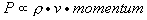
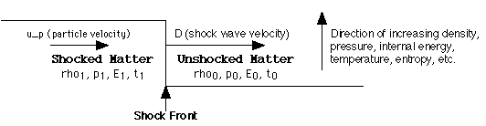
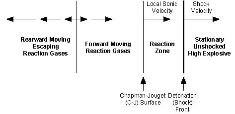
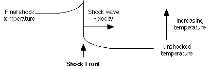
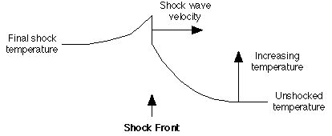
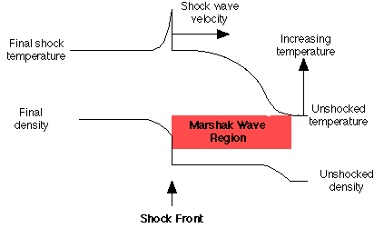
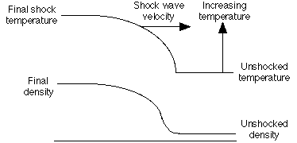

Version 2.17: 5 December 1997
This material may be excerpted, quoted, or distributed freely provided that attribution to the author (Carey Sublette), the document name (Nuclear Weapons Frequently Asked Questions) and this copyright notice is clearly preserved, and the URL of this website is included: Nuclear Weapon Archive
Only authorized host sites may make this document publicly available on the Internet through the World Wide Web, anonymous FTP, or other means.
Unauthorized host sites are expressly forbidden.
The only authorized host site for the NWFAQ in English is the Nuclear Weapon Archive (nuclearweaponarchive)
Back to Main IndexThis section provides background in the fundamental physical phenomena that govern the design of nuclear weapons, especially thermonuclear weapons. This section does not address nuclear physics which are introduced in Section 2, and discussed further in Section 4. It addresses instead the behavior of matter at high densities and temperatures, and the laws controlling its flow.
Although the reader may be able to follow the discussions of physics and design in Section 4 without it, familiarity with the principles discussed here is essential for genuine insight into the design of nuclear weapons. Since the same principles tend to crop up repeatedly in different contexts, and it is inconvenient to explain basic physics while addressing engineering considerations, I provide an overview of the non-nuclear physical principles involved below. Section 2 provides a discussion of the nuclear reactions involved.
Readers with a grounding in physics will find much of this discussion too elementary to be of interest. Please skip anything you are already familiar with.
Thermodynamics concerns itself with the statistical behavior of large collection of particles, a substantial quantity of matter for example. A literal reading of the term "thermodynamics" implies that the topic of discussion is the motion of heat. In fact, thermodynamics specifically addresses the condition of thermal equilibrium, where the motion of heat has ceased. The principle motion of interest is the randomized motion of the particles themselves, which gives rise to the phenomenon called "heat". It is this equilibrium condition of random motion that can be accurately characterized using statistical techniques. It is important to realize that the topic of thermodynamics is the study of the properties of matter at least as much as it is of heat.
There are two very important principles of thermodynamics, called the First and Second Laws of Thermodynamics. These are often stated in the form:
A more useful statement of the First Law in practical situations is to say that the change in total energy of a system is equal to the work done on the system, plus the heat added to the system. The Second Law states that the amount of heat in a closed system never decreases. The implications of these laws are discussed further below.
3.1.1 Kinetic Theory of Gases
The gaseous state is the simplest form of matter to analyze. This is fortunate, since under the extreme conditions encountered in chemical and nuclear explosions, matter can usually be treated as a gas regardless of its density or original state.
The basic properties of a gas can be deduced from considering the motions of its constituent particles (the kinetic theory). The pressure exerted by a gas on a surface is caused by the individual molecules or atoms bouncing elastically off that surface. This pressure is equal to the number of molecules striking the surface per unit of time, multiplied by the average momentum of each molecule normal (i.e. at right angles) to the surface. The number of impacts per second is proportional (~) to the particle density of the gas (rho, particles per unit volume), and how fast the molecules are traveling (the average molecular velocity v):
Eq. 3.1.1-1

The average momentum is proportional to v times the mass of the particles (m). The pressure is thus:
Eq. 3.1.1-2
P ~ rho*v*v*m.
Actually we can state that:
Eq. 3.1.1-3
P = rho*v*v*m/3
since the contribution of molecular velocity normal to the surface in three dimensions is 1/3 of the squared magnitude.
Since v*v*m/2 is the particle kinetic energy (KE_p), we can also say:
Eq. 3.1.1-4
P = rho*KE_p*(2/3)
That is, pressure is proportional to the average particle kinetic energy and the particle density, or equal to two-thirds of the total kinetic energy, KE, in a given volume of gas (the kinetic energy density). This is usually expressed as:
Eq. 3.1.1-5
P = 2/3(KE/V), or
PV = 2/3 KE,
where P is the pressure.
Now the thing we call temperature is simply the average kinetic energy of the particles of a gas. A constant of proportionality is used to convert kinetic energy, measured in joules or ergs, into degrees Kelvin (K). Together these considerations give us the Ideal Gas Law:
Eq. 3.1.1-6
PV = NkT, where
P = pressure, V = volume, N = number of particles, k = Boltzmann's constant (1.380 x 10^-16 erg/degree K), and T = temperature. N/V is of course the particle density (designated n).
The constant factor 2/3 was absorbed by Boltzmann's constant. As a result, if we want to express the average particle kinetic energy of a gas at temperature T we must say:
Eq. 3.1.1-7
KE_p = 3/2 kT
An ideal gas (also called a perfect gas) is one in which there are no interactions (that is, repulsive or attractive forces) between atoms. For such a gas, the Ideal Gas Law holds true. The simplest case of a perfect gas is a perfect monatomic gas, one in which all of the energy in the gas is in the form of particle motion (i.e. the particles themselves do not absorb any energy). This is the only case we have considered so far. Helium or argon are examples of ideal monatomic gases to a very good approximation (they are monatomic, and attractive forces only become significant close to their liquefaction temperatures).
Molecular or polyatomic gases, ones in which the particles are molecules of two or more atoms, can absorb energy through rotation and vibration. Such gases are not monatomic, but they are still ideal. Under some conditions gases can absorb energy internally by other processes, like ionization, which violate ideal gas behavior. When conditions are such that attractive forces become significant (near liquid or solid condensation points) the ideal gas law also breaks down.
Perfect monatomic gases are of special interest to us here, not only because they are particularly simple to analyze, but because under many extreme physical regimes all matter tends to behave like a perfect monatomic gas (kinetic energy dominates other forms of energy present).
3.1.2 Heat, Entropy, and Adiabatic Compression
Simply put, heat is the random motion of the particles in matter. In common usage we talk about something with a higher temperature as being "hotter". However temperature is not a universal measure of the thing we call heat. Suppose we take a container of a perfect gas, and we squeeze it and reduce its volume. To squeeze it and compress the gas we must do work which, by the First Law of Thermodynamics, is added to the internal energy of the gas. Since this is a perfect gas, all of the added energy appears as kinetic energy. That is, the temperature goes up. But have we actually added heat to make it hotter?
The answer is no. We can get the energy back in the form of work, by letting it expand back to its original volume. The temperature will also drop back to the original state. This compression process (called adiabatic compression) is reversible since we can return to the original state.
To increase the temperature of the container of gas without changing its volume, we must place it in contact with something that is hotter. The heat diffuses from the hotter object to the container. As the gas in the container warms, the hotter object grows cooler.
How can we return the gas to its original state? We must place it in contact with something that is colder than the original gas temperature. The heat then diffuses to the colder object. Although the gas in the container is now in its original state, the whole system is not. The hotter object is cooler, the colder object is warmer. This process is irreversible (we say "entropy of the system has increased").
Temperature is a measure of heat in a gas only at constant volume. The generalized measure of heat is entropy. Entropy is defined as the ratio of the total energy of a system to its temperature. As heat is added to a system this ratio increases. Work done on the system leaves the ratio unchanged.
Adiabatic compression is compression where the entropy is constant (no heat is added or removed). If flows of heat occur, then the process is non-adiabatic and causes irreversible change.
3.1.3 Thermodynamic Equilibrium and Equipartition
I have just talked about heat flowing from hotter objects to colder ones. This process implies that a system of objects tends to move to a state where all of the objects are at the same temperature. When this occurs, heat ceases to flow. Such a state is called "thermodynamic equilibrium", and all systems tend to evolve toward this equilibrium naturally. The faster heat can flow in the system, the faster this equilibrium is reached.
The idea of thermodynamic equilibrium is extremely general. It applies not only to "objects" - physically separate parts of a system - but all parts of a system - separate or not.
For example in a mixture of particles of different types, different gas molecules say, each type of particle will be in equilibrium with the others. That is, they will have the same temperature - the same average kinetic energy. If each type of particle has a different mass from the others, then each must also have a unique average velocity for the kinetic energies of each type to be equal. One implication of this is that when a gas becomes ionized, the electrons knocked loose become separate particles and will come into thermodynamic equilibrium with the ions and un-ionized atoms. Since they are much lighter than atoms or ions, their velocities will be much higher.
We have also already applied the equilibrium principle in deriving the Ideal Gas Law. The total kinetic energy was divided equally among the three spatial directions of motion, e.g. they were in equilibrium with each other. These spatial directions are called the "degrees of freedom" of a monatomic perfect gas. Since the kinetic energy of a particle in such a gas is 3kT/2, each degree of freedom accounts for kT/2 energy per particle. This is also true of polyatomic gases, which have additional degrees of freedom (e.g. from vibration and rotation). Each available degree of freedom will have kT/2 energy when in equilibrium. This is the theorem of equipartition of energy.
The actual number of available degrees of freedom in a polyatomic gas may vary significantly with temperature due to quantum-mechanical considerations. Each degree of freedom has a characteristic energy of excitation, and if the value of kT/2 is not large enough then the excitation of a given state will be negligible.
3.1.4 Relaxation
To reach equilibrium between different particles and different degrees of freedom in a system, the different parts of the system must be able to exchange energy. The rate of energy exchange determines how long it takes to establish equilibrium. The length of this equilibrating period is called the relaxation time of the system. A complex system will typically have several relaxation times for different system components.
The farther a degree of freedom is from equilibrium, the faster it will converge toward the equilibrium state. Conversely, as it approaches equilibrium, the rate of convergence declines. This is expressed by the standard relaxation equation:
Eq. 3.1.4-1
dE/dt = (E_eq - E)/t_relax
where E is the measure of the current energy of the degree of freedom (avg. kinetic energy, temperature, number of particles excited, etc.), E_eq is the equilibrium value, and t_relax is the relaxation time.
The solution of this linear differential equation shows us that the difference between the current state and the equilibrium state declines exponentially with time:
Eq. 3.1.4-2
E = E_init*Exp[-t/t_relax] + E_eq*(1 - Exp[-t/t_relax])
Over each time interval t_relax, the difference E - E_eq declines by a factor of 1/e. Although according to this equation complete equilibrium is never formally reached, over a finite (usually small) number of relaxation intervals the difference from equilibrium becomes undetectable.
What determines the value of t_relax? This is determined by how frequently a member of a degree of freedom can be expected to undergo an energy exchange event, and how effective that event is in transferring energy.
For particles of similar mass, a single collision can transfer essentially all of the kinetic energy from one particle to the other. The relaxation time for bringing two populations of particles with different kinetic energies into equilibrium is thus the average time between collisions. In air at normal temperatures and pressures, this time is about 0.1 nanoseconds. At higher densities and temperatures, the distances traveled between collisions is shorter, and the velocities are higher, so the time is correspondingly shorter.
If colliding particles have greatly different masses, then the efficiency of each collision in exchanging energy is reduced by a factor equal to the mass ratio. In the case of electrons and ions, since electrons are lighter than nucleons by a factor of 1836 (about) this ratio is 1/(1836*A), where A is the atomic mass. Unless the temperature of the electrons is much colder than that of the ions though, the actual relative relaxation rate is much higher than this would indicate because of the high velocities of the light electrons. If they are not too far from equilibrium, the actual relaxation time ratio between electrons and ions, and ions alone is about equal to the square root of the mass ratio: 1/(1836*A)^0.5.
3.1.5 The Maxwell-Boltzmann Distribution Law
So far we have talked about the average velocity and kinetic energy of a particle. In reality, no particle will have exactly the average energy. Even if we created a system in which every particle initially had exactly the same energy (all were average), within a single relaxation interval the energy would be dramatically redistributed. Within a few more intervals a stable continuous energy distribution would be established.
Statistical mechanics shows that the actual equilibrium distribution of particle energies can be described by the distribution law worked out first by Maxwell and refined by Boltzmann. The function creates a roughly bell-shaped curve, with the peak (most probable) energy at kT. The function declines exponentially away from the peak, but never (formally) goes to zero at any energy greater than zero, so small numbers of both very fast and very slow particles are present in an equilibrium gas.
The Maxwell-Boltzmann distribution for energy is:
Eq. 3.1.5-1 dN/dE = N*2*Pi*(1/(Pi*kT))^(3/2) Exp(-E/kT) E^(1/2)
where N is the number of particles present. Integrating the above equation over a given energy range gives the number of particles in that range.
Most of the terms in the above equation are simply normalizing factors to make the integral come out right (after all, integrating from zero energy to infinity must equal N). The factor that actually determines the distribution law is called the Boltzmann factor: Exp(-E/kT). This distribution factor applies to any system of particles where each energy state is equally important in a statistical sense (that is, no statistical weight is applied to any energy state). A gas where this is true (like the gases treated by classical kinetic theory) can be called a Boltzmann gas. There are two other types of gases that follow different distribution laws which will be discussed later - the Bose gas and the Fermi gas.
Below is a plot for the Maxwell-Boltzmann particle density distribution, dN, with kT=1. The peak value of dN is at particle energy kT/2, but since the energy density distribution is proportional to dN*E, the peak of the energy density distribution is actually 3kT/2.
3.1.6 Specific Heats and the Thermodynamic Exponent
The Ideal Gas Law describes the properties of gases with respect to temperature, that is the kinetic energy of motion. How do we describe the properties of a gas with respect to the total internal energy? In the case of a monatomic gas this is easy of course, since the kinetic energy is the total internal energy:
PV = NkT = 2/3 KE
How should we handle polyatomic gases? Before we can do this we need some convenient way of measuring the thermodynamic properties of different gases.
As I have explained above, an ideal gas with additional degrees of freedom has a larger internal energy than does an monatomic gas at the same temperature. This internal energy, designated U, is also proportional to the (absolute) temperature (this is another common way of expressing the concept of ideal gas). This allows us to establish a constant for each gas that describes how much thermal energy is required to raise its temperature a fixed amount. This constant is called the specific heat.
There are actually two commonly used specific heat definitions for gases, the specific heat at constant volume (c_v) and the specific heat at constant pressure (c_p). C_v measures the amount of energy required to raise the temperature in a sealed, fixed volume container. In such a container heating also causes the pressure to rise. C_p measures the amount of energy required to raise the temperature of a gas that is allowed to expand sufficiently to maintain constant pressure.
These two specific heats are not independent. In fact, the ratio between them is fixed by the number of degrees of freedom of the gas. This gives us the constant that we use for describing the thermodynamic properties of a gas - the thermodynamic exponent. This constant is represented by the lower case Greek letter gamma. It is defined by:
Eq. 3.1.6-1
gamma = c_p/c_v
and is equal to 5/3 for a monatomic gas. The thermodynamic exponent has many other names such as the adiabatic index, adiabatic exponent, isentropic exponent, and the polytropic exponent.
Recall that the internal energy density of a monatomic gas (KE/V) is given by:
P = 2/3 (KE/V)
Since KE is also the total internal energy we can say:
Eq. 3.1.6-2
P = 2/3 U/V
The factor 2/3 happens to be equal to gamma minus 1: 5/3 - 1 = 2/3. This is a special case of a law valid for all perfect gases. We can thus write the general law:
Eq. 3.1.6-3
P = (gamma - 1)*(U/V)
Why is gamma called the thermodynamic or adiabatic exponent? It is because of the following relationship that describes the state of matter undergoing adiabatic compression:
Eq. 3.1.6-4
P(V^gamma) = constant
The constant is determined by the gases' original entropy. This is sometimes called the polytropic law.
The thermodynamic exponent determines the compressibility of a gas. The larger the value of gamma, the more work is required to reduce the volume through adiabatic compression (and the larger the increase in internal energy). An infinitely compressible gas would have an exponent of 1.
The thermodynamic literature often uses P-V diagrams that plot pressure (P) versus volume (V). A plot of the adiabatic function on a P-V diagram produces an adiabatic curve, also called an isentropic curve since every point on the curve has the same entropy. In contrast, isothermal curves lie below the adiabatic curve with increasing pressure (assuming they start at the same P-V state) since a gas must lose entropy to maintain the same temperature. Curves where entropy is increased with increasing pressure lie above (these are Hugoniot curves which will be discussed further in connection with shock waves).
Gamma for a gas is related to the number of degrees of freedom (n_f) by:
Eq. 3.1.6-5
gamma = (2/n_f) + 1
Thus a monatomic perfect gas is 2/3 + 1 = 5/3 as noted above. A diatomic gas has a maximum of 7 degrees of freedom, but only some of them may be excited at a given temperature, with more states being excited at higher temperatures.
If a gas releases energy during compression, thus adding additional kinetic energy, (due to a chemical reaction for example) then it will have a higher value of gamma.
Some example values of gamma are given in the table below.
| Table 3.1.6-1. Examples of Thermodynamic Exponents for Gases | ||
|---|---|---|
| Material | Exact Value | Approx. Value |
| Detonating Explosive Gas Mixture | - | 2.5-3.0 |
| Perfect Monatomic Gas | 5/3 | 1.667 |
| Air | 7/5 | 1.400 |
| Photon Gas | 4/3 | 1.333 |
| Diatomic Gas (fully excited) | 9/7 | 1.286 |
| Infinitely Compressible Gas | 1/1 | 1.000 |
3.1.7 Properties of Blackbody Radiation
The equipartition of energy in an equilibrium system also extends to radiant energy present in the system. Photons are emitted and absorbed continually by matter, creating an equilibrium photon gas that permeates it. This photon must have the same temperature as the rest of the system also.
The energy distribution in an equilibrium photon gas is determined by quantum mechanical principles known as Bose-Einstein statistics. Photons belong to a class of particles called bosons that, by definition, obey these statistics. A key feature of bosons is that they prefer to be in the same energy state as other bosons. A photon gas is thus an example of a Bose gas. The distribution factor for Bose-Einstein statistics is: 1/(Exp(E/kT) - 1).
This fact gives rise to an energy distribution among the particles in a photon gas called the blackbody spectrum which has a temperature dependent peak reminiscent of the Maxwell-Boltzmann distribution. The term "blackbody" refers to the analytical model used to derive the spectrum mathematically which assumes the existence of a perfect photon absorber or (equivalently) a leakless container of energy (called in German a "hohlraum").
The kinetic theory of gases can be applied to a photon gas just as easily as it can to a gas of any other particle, but we need to make a few adjustments. From Eq. 3.1.1-1 we had:
P ~= rho*v*momentum
Which gave us Eq. 3.1.1-3:
P = rho*v*v*m/3
once we had substituted m*v to represent the momentum of a particle. Since photons have zero mass, we must use a different expression to express the momentum of a photon. This is given by:
Eq. 3.1.7-1
momentum_photon = E_photon/c
where E_photon is the photon energy, and c is the photon velocity (i.e. the speed of light, 2.997 x 10^10 cm/sec). It is interesting to compare this to an equivalent expression for massive particles: momentum = 2*KE/v. Substituting Eq. 3.1.7-1, and the photon velocity, into Eq. 3.1.1-3 give us:
Eq. 3.1.7-2
P_rad = rho*c*(E_photon/c)/3 = rho*E_photon/3
Since rho*E_photon is simply the energy density of the photon gas, we can say:
Eq. 3.1.7-3
P_rad = (U_rad/V)/3
From Eq. 3.1.6-3 it is clear that:
Eq. 3.1.7-4
gamma_rad = 1 + 1/3 = 4/3
We can relate the energy density of a blackbody to the thermal radiation emissions (energy flux) from its surface (or from a window into an energy container). Assuming the energy field is isotropic, the flux is simply the product of the energy density and the average velocity with which the photons emerge from the radiating surface. Of course all of the photons have a total velocity equal to c, but only photons emitted normal to the surface (at right angles to it) emerge at this velocity. In general, the effective velocity of escape is Cos(theta)*c, where theta is the angle between the light ray and the normal vector. Now the fraction of a hemisphere represented by a narrow band with width d_theta around theta is Sin(theta)*d_theta. Integrating this from zero to 90 degrees gives (in Mathematica notation): (U_rad/V)*Integrate[c*Cos(theta)*Sin(theta),{theta,0,90}] = (U_rad/V)*c/2 Since the flux is isotropic, half of it is flowing away from the surface. We are only concerned with a the flux flowing out so we must divide it by another factor of two. This gives:
Eq. 3.1.7-5
S = c*(U_rad/V)/4
where S is the flux (emission per unit area).
At equilibrium the radiation energy density is determined only by temperature, we want then to have a way for relating a temperature T to U_rad/V. Using Eq. 3.1.7-3 and a mathematically precise statement of the second law of thermodynamics, it is easy to show that U_rad/V is proportional to T^4. The standard constant of proportionality, called the Stefan-Boltzmann constant and designated sigma, is defined so that:
Eq. 3.1.7-6
U_rad/V = (4*sigma/c)*T^4
This is a convenient way of formulating the constant, because it allows us to say:
Eq. 3.1.7-7
S = sigma*T^4
Eq. 3.1.7-7 is known as the Stefan-Boltzmann Law. The Stefan-Boltzmann constant is derived from Planck's constant and the speed of light. It has the value 5.669 x 10^-5 erg/sec-cm^2-K, with T in degrees K. Equation 3.1.6-3 of course becomes:
Eq. 3.1.7-8
P_rad = ((4*sigma)/(3*c))*T^4
It can easily be seen from the Stefan-Boltzmann Law that the amount of radiant energy present varies dramatically with temperature. At room temperature it is insignificant, but it grows very rapidly. At sufficiently high temperatures, the energy present in the blackbody field exceeds all other forms of energy in a system (which is then said to be "radiation dominated"). The average photon energy is directly proportional to T, which implies the photon density varies as T^3. In radiation dominated matter we can expect the number of photons present to be larger than the number of all other particles combined.
If both ordinary particles and photons are present, we have a mixture of Boltzmann and Bose gases. Each contribute independently to the energy density and pressure of the gas mixture. Since the kinetic energy pressure for a perfect gas is:
PV = NkT -> P = nkT
and the kinetic energy is:
Eq. 3.1.67-9 P = 2/3 KE/V = 2/3 U_kin/V -> U_kin/V = 3/2 nkT
we have:
Eq. 3.1.7-10
P_total = nkT + ((4*sigma)/(3*c))*T^4
and:
Eq. 3.1.7-11
U_total/V = 3/2 nkT + ((4*sigma)/c)*T^4
We can calculate the relative kinetic and radiation contributions to both pressure and energy at different particle densities and temperatures. For example in hydrogen at its normal liquid density, radiation energy density is equal to the kinetic energy of the ionized gas at 1.3 x 10^7 degrees K.
The energy distribution of the radiation field with photon energy is given by Planck's Law, which is usually stated in terms of photon frequency instead of energy. The energy of a photon of frequency nu is simply:
Eq. 3.1.7-12
E_phot = h*nu
where nu is in hertz (c/wavelength), and h is Planck's constant (6.62608 x10^-27 erg-sec). Planck's law (aka the Planck function) is usually given as:
Eq. 3.1.7-13
dE/dnu = ((8*Pi*h*nu^3)/c^3) * (1/(Exp((h*nu)/kT) - 1))
where dE/dnu the energy density/frequency derivative. The last factor in the equation is of course the Bose-Einstein distribution factor. Integrating over a range of nu gives the energy density in that frequency range. For our purposes, it is often more convenient to express the energy density in terms of photon energy rather than frequency:
Eq. 3.1.7-1e
dE/dE_phot = ((8*Pi*E_phot^3)/(h^3 c^3)) * (1/(Exp(E_phot/kT) - 1))
The Planck distribution always has its peak (the maximum spectral power) at h*nu_max = 2.822 kT, while 50% of the energy is carried by photons with energies greater than 3.505 kT, and 10% of the energy is above 6.555 kT. Most of the energy in the field is thus carried by photons with energies much higher than the average particle kinetic energy.
Below is a diagram of the Planck function at a temperature of 1 KeV, plotting the spectral energy density against the photon energy in KeV.
I have already discussed one state of matter - gases - at some length. In this section I shift to the application of thermodynamic principles to other states of matter, and discuss some properties that are not strictly thermodynamic in nature.
3.2.1 Equations of State (EOS)
An equation of state (EOS) provides a complete description of the thermodynamic properties of a substance; i.e. how the density, pressure, and internal energy of a substance relate to each other. The Ideal Gas Law is a special case of an equation of state for gases. The generalized gas EOS given previously:
P = (gamma - 1)*(U/V)
expands the ideal law to all gases if an appropriate value of gamma is chosen.
Such a simple law is not really adequate for real substances over widely varying conditions. Even with comparatively simple substances such as gases, the effective value of gamma can change. As molecular gases increase in temperature more degrees of freedom may become excited, the gases may disassociate into atoms, and the atoms may become ionized. All of these processes drive down the value of gamma by absorbing energy that would otherwise appear as kinetic motion. By considering the regime of interest, we can usually choose a suitable value of gamma to permit the use of the simple gas equation. More sophisticated approaches are to provide terms for each mechanism that contributes to the total internal energy.
3.2.2 Condensed Matter
The term "condensed matter" refers to two of the three common states of matter: solids and liquids. It describes the fact that the matter is not gaseous, it has condensed to a compact form bound together by interatomic attractive forces. At zero pressure (or atmospheric pressure, which is the same thing for practical purposes) condensed matter exists in equilibrium. The negative pressure generated by the binding forces is exactly balanced by positive forces generated by the mutual repulsion of the outer electron shells (Coulomb repulsion) and the thermal motion of the atoms. Condensed matter thus does not expand to infinitely low density under zero pressure like a gas, it has a definite zero pressure density.
Another important difference between condensed matter and gases is the strength of the internal repulsive forces. Coulomb repulsion is much stronger than the kinetic forces produced by thermal motion in gases under ordinary conditions, which agrees with the common experience that a brick is harder to compress than air.
If the thermal energy in matter is low enough, the position of atoms are held in fixed positions by Coulomb repulsion - it is a solid. When the thermal vibrations become sufficiently energetic, the atoms break free from fixed lattice positions and can move around and the solid melts.
3.2.3 Matter Under Ordinary Conditions
The operative definition of "ordinary conditions" I am using here are the conditions under which condensed matter exists. It will be shown below that regardless of its composition or initial state, at sufficiently extreme conditions of pressure or temperature matter ceases to be condensed and tends to behave like a perfect gas.
There are standard definitions of ordinary conditions: STP or Standard Temperature and Pressure (0 degrees C temperature, 760 mm Hg pressure); or 0 degrees K and zero pressure. The conditions of normal human experience do not deviate much from STP, and the properties of most substances under these conditions are abundantly documented in numerous references. For our purposes "ordinary conditions" extends up to temperatures of a few tens of thousands of degrees C, and pressures in the order of several megabars (millions of atmospheres). For comparison the conditions in the detonation wave of a powerful high explosive do not exceed 4000 degrees C and 500 kilobars; the pressure at the center of the Earth is approximately 4 megabars.
Under our "ordinary conditions" the thermal energy of matter remains below both the binding and compressive energies. In this range matter is not appreciably ionized. Its mechanical strength is small compared to the pressures of interest, and can usually be neglected.
Since increasing pressure also strengthens the repulsive forces between atoms by forcing them closer together, the melting point goes up as well. In the megabar range matter remains solid even at temperatures of 20-30,000 degrees C. However it usually does not matter whether the condensed state is liquid or solid, the energy absorbed in melting being too small to notice compared to the compressive and thermal energies.
Some materials undergo abrupt phase changes (discontinuous changes in structure and density) in this realm. When phase changes occur with escalating pressure, atoms suddenly rearrange themselves into lower energy configurations that are denser. For example iron undergoes a phase change at 130 kilobars. The transformation of delta phase plutonium alloys into the denser alpha phase at pressures of a few tens of kilobars is of particular significance.
Despite these differences and added complexities, we can still produce reasonable approximations for condensed matter equations of state using a "Gamma Law" similar to the gas law:
Eq. 3.2.3-1
P + P_0 = (gamma - 1)*U*(rho/rho_0)
where P is the compression pressure at the state of interest, P_0 is the internal pressure at STP (or some other reference state), rho is the density of the state of interest, and rho_0 is the reference density. Note that P_0 is exactly balanced by the negative binding pressure under reference conditions.
This gives us an adiabatic law for condensed matter:
Eq. 3.2.3-2
(P + P_0)*(rho_0/rho)^gamma = constant = P_0
Another useful relationship is the equation for internal energy per unit mass (E) rather than energy per volume (U):
Eq. 3.2.3-3
E = U/rho_0 = (P + P_0) / ((gamma - 1)*rho)
The value of gamma, the "effective thermodynamic exponent", must be determined from experimental data. Unfortunately the value of gamma is not constant for condensed matter, it declines with increasing density and pressure. It is virtually constant below 100 kilobars, but the decline is in the range of 15-30% at 2 megabars. Although the rate of decline varies with substance, the low pressure value still gives a reasonable indication of compressibility of a substance at multi-megabar pressures. A common assumption in high pressure shock work is that the product of (gamma-1) and density is constant:
Eq. 3.2.3-4
(gamma_0 - 1)*rho_0 = (gamma - 1)*rho
an approximation which seems to work fairly well in practice. Using this approximation, Eq. 3.2.3-3 becomes particularly convenient since E varies only with P.
Eq. 3.2.3-5
E = (P + P_0) / G
where
G = (gamma_0 - 1)*rho_0 = constant
The thermodynamic exponent is usually represented in the literature of solid state or condensed matter physics by the "Gruneisen coefficient" designated with the upper case Greek letter GAMMA. The relationship between them is:
Eq. 3.2.3-6
GAMMA = gamma - 1
Representative values of P_0, density_0, and low pressure gamma for some materials of particular interest are given below:
| Table 3.2.3-1. Gamma-Law Equations of State for Selected Materials | |||
|---|---|---|---|
| Material | Density_0 | Gamma | P_0 (kilobars) |
| Gold | 19.24 | 4.05 | 510 |
| Aluminum | 2.785 | 3.13 | 315 |
| Copper | 8.90 | 3.04 | 575 |
| Detonating High Explosive | - | 3.0 | - |
| Uranium | 18.90 | 2.90 | 547 |
| Tungsten | 19.17 | 2.54 | 1440 |
| Beryllium | 2.865 | 2.17 | 604 |
| Lithium | 0.534 | 2.1 | - |
| Zirconium | 6.49 | 1.771 | 580 |
| Perfect Monatomic Gas | - | 1.667 | - |
3.2.4 Matter At High Pressures
As pressures continue to increase above several megabars, the electronic structure of the atom begins to break down. The Coulomb forces become so strong that the outer electrons are displaced from the atomic nuclei. The material begins to resemble individual atomic nuclei swimming in a sea of free electrons, which is called an electron gas. This gas is governed by quantum mechanical laws, and since electrons belong to a class of particles called fermions (which obey Fermi-Dirac statistical laws), it is an example of a Fermi gas.
In contrast to the Bose-Einstein gas of photons, where particles prefer to be in the same energy state, fermions cannot be in the same energy state. Even at absolute zero, the particles in a Fermi gas must have non-zero energy. The distribution factor for Fermi statistics is: 1/(Exp(E/kT) + 1).
If all of the electrons are in their lowest energy state, which means the gas is cold (no additional thermal energy), it is said to be Fermi degenerate. A fully degenerate state is the lowest energy state that a Fermi gas can be in. A degenerate Fermi gas is characterized by the Fermi energy, the highest energy state in the gas. This is given by:
Eq. 3.2.4-1 E_Fermi = 5.84 x 10^-27 (n^(2/3)) erg = 3.65 x 10^-15 n^(2/3) eV
where n is the electron density (electrons/cm^3). The average electron energy is:
Eq. 3.2.4-2 E_Favg = 3/5 E_Fermi
and the pressure produced, the Fermi pressure, is:
Eq. 3.2.4-3 P_Fermi = 2/3 n*E_Favg = 2/5 n*E_Fermi = 2.34 x 10^-33 (n^(5/3)) bars
Note that relationship between the average energy and the pressure is precisely the same as that for a classical perfect gas.
When the average electron energy exceeds the binding energy of electrons in atoms, then the electrons behave as a Fermi gas. If only some of the outer electrons are loosely bound enough meet this criterion, then only these electrons count in determining the electron density in the equations above, the remainder continue to be bound to the atomic nuclei.
The Fermi energy of a gas is sometimes characterized by the "Fermi Temperature" (or degeneracy temperature). This is defined as T_Fermi such that:
Eq. 3.2.4-4 kT_Fermi = E_Fermi
This is not the actual temperature of the gas. Its significance is that if the kinetic temperature is substantially lower than T_Fermi then the kinetic energy is small compared to the Fermi energy and the gas can be treated reasonably well as if it were completely degenerate ("cold").
To illustrate these ideas here are some examples: Uranium at twice normal density (37.8 g/cm^3) would have a Fermi energy of 156 eV, and a pressure of 895 megabars. This is much higher than the real pressure required to achieve this density (5.0 megabars), and indicates that the uranium is not a Fermi gas at this pressure.
A pressure of 100,000 megabars corresponds to a Fermi energy of 1034 eV, and an average energy of 621 eV. The average energy is about the same as the ionization energy for uranium's 38th ionization state. Thus we can expect about 41% of uranium's electrons to dissociate at this pressure, and contribute to the electron gas density (1.5 x 10^26 electrons/cm^3). This gives a density estimate of 1560 g/cm^3.
Deuterium at 1000 times normal liquid density (159 g/cm^3) is a true Fermi gas. It has E_Fermi = 447 eV (T_Fermi = 5.2 million degrees K), far higher than its ionization energy (13.6 eV), and P_Fermi = 12,500 megabars. What this says is that at least 12.5 gigabars of pressure is required to achieve the stated density, and that as long as the entropy increase during compression keeps the temperature below 5 million degrees, the gas can be considered cold and the compression process will be efficient. Pressures between 10 and 100 gigabars are representative of conditions required to create fusion in thermonuclear weapons.
A useful rule-of-thumb about electron density in various materials can be obtained by observing that most isotopes of most elements have a roughly 1:1 neutron/proton ratio in the nucleus. Since the number of electrons is equal to the number of protons, we can assume that most substances contain a fixed number of electrons per unit mass: 0.5 moles/gram (3.01 x 10^23 electrons). This assumption allows us to relate mass density to the Fermi gas pressure without worrying about chemical or isotopic composition.
The stable isotopes of most light elements follow this rule very closely, for two that are commonly used as fuel in thermonuclear weapons (Li-6 and D) it is exact. Very heavy elements contain somewhat fewer electrons per gram, by 25-30%. The largest deviations are the lightest and heaviest isotopes of hydrogen: 1 mole/gram for ordinary hydrogen, and 0.333 moles/gram for tritium.
Since the only way a cold Fermi gas can acquire additional energy is in the form of electron kinetic energy, when the thermal energy is substantially above T_Fermi, then the kinetic energy dominates the system and the electrons behave like a classical Boltzmann gas.
Thus as the electronic shells of atoms break down, the value of gamma approaches a limiting value of 5/3 with respect to the total internal energy, regardless of whether it is thermal or quantum mechanical in nature.
The total pressure present is the sum of the Fermi pressure, the kinetic pressure of the Boltzmann gas consisting of the nuclei and non-degenerate electrons, and the pressure of the photon Bose gas. Similarly, the energy density is the sum of the contributions from the Fermi, Boltzmann, and Bose gases that are present.
Now when electrons are stripped from atoms through thermal ionization, we also have an electron gas which is technically a Fermi gas. We rarely consider thermally ionized plasmas to be Fermi gases though, because usually the electron densities are so low that the thermal energy is much greater than the Fermi energy.
An important consequence of this is the phenomenon of "ionization compression". At STP most condensed substances have roughly the same atom density, on the order of 0.1 moles/cm^3; the densities can vary considerably of course due to differing atomic masses. By the rule of thumb above, we can infer that electron densities also roughly mirror mass densities.
If two adjoining regions of STP condensed matter of different electron density are suddenly heated to the same extremely high temperature (high enough to fully ionize them) what will happen?
Since the temperature is the same, the radiation pressure in both regions will be the same also. The contribution of the particle pressure to the total pressure will be proportional to the particle density however. Initially, in the un-ionized state, the particle densities were about the same. Once the atoms become ionized, the particle densities can change dramatically with far more electrons becoming available for dense high-Z materials, compared to low density, low-Z materials. Even if the system is radiation dominated, with the radiation pressure far exceeding the particle pressures, the total pressures in the regions will not balance. The pressure differential will cause the high-Z material to expand, compressing the low-Z material.
The process of ionization compression can be very important in certain thermonuclear systems, where high-Z materials (like uranium) are often in direct contact with low-Z materials (like lithium hydrides).
It is interesting to note that when matter is in a metallic state, the outermost electrons are so loosely bound that they become free. These electrons form a room-temperature plasma in the metal, which is a true Fermi gas. This electron plasma accounts for the conductance and reflectivity of metals.
3.2.4.1 Thomas-Fermi Theory
A widely used approximate theory of the high pressure equation of state was developed in 1927-1928 that ignores the electron shell structure of matter entirely. Called the Thomas-Fermi (TF) theory, it models matter as a Fermi gas of electrons with a Boltzmann gas of nuclei evenly distributed in it, using a statistical description of how the electron gas behaves in the electrostatic field.
The Thomas-Fermi theory includes only the repulsive forces of the electron gas, and the thermal pressure, and ignores the attractive forces that hold solid matter together. It is thus a good approximation of matter only at high enough pressures that repulsive forces dominate. Fortunately experimental EOS data is available at pressures extending into this range (several megabars). Various adjustments to TF theory have been proposed to extend its range of application, such as the Thomas-Fermi-Dirac (TFD) model that includes attractive forces (others exist - Thomas-Fermi-Kalitkin, etc.)
TF theory was employed at Los Alamos together with the existing high-pressure EOS data (at that time only up to hundreds of kilobars) to perform the implosion calculations for the plutonium bomb. Elements with high electron densities (which, from the above rule-of-thumb, is more or less equivalent to elements with high mass densities) are described reasonably well by the Thomas-Fermi model at pressures above about 10 megabars.
3.2.5 Matter At High Temperatures
If the thermal or kinetic energy of the atoms in a substance exceeds the binding and compressive energies, then regardless of pressure it becomes a gas. In highly compressed condensed matter, this occurs at several tens of thousands of degrees C. When the kinetic energy substantially exceeds the combined energies of all other forms of energy present, matter behaves as a perfect gas.
At sufficiently high temperatures, the outer electrons of an atom can become excited to higher energy levels, or completely removed. Atoms with missing electrons are ions, and the process of electron removal is called ionization. Then number of electrons missing from an atom is its ionization state. Excitation and ionization occurs through collisions between atoms, collisions between atoms and free electrons, and through absorption of thermal radiation photons. When all of the atoms have become ionized, then matter is said to be "fully ionized" (in contrast the phrase "completely ionized" usually refers to an atom that has had all of its electrons removed).
The energy required to remove an unexcited electron is called the ionization energy. This energy increases with each additional electron removed from an atom due to the increase in ionic charge, and the fact that the electron may belong to a shell closer to the nucleus. The ionization energy for the first ionization state is typically a few electron volts. Hydrogen has one of the highest first ionization energies (13.6 eV), but most elements have first ionization energies of 4 - 10 eV. The energy required to remove the last electron from a plutonium atom (the 94th ionization state) in contrast is 120 KeV. The first and last ionization energies for some elements common in nuclear weapons are:
| Table 3.2.5. Representative First and Last Ionization Energies | ||
|---|---|---|
| Element | First Ionization (eV) | Last Ionization (eV) |
| Hydrogen | 13.598 | - |
| Lithium | 5.39 | 3rd: 122.4 |
| Beryllium | 9.32 | 4th: 217.7 |
| Oxygen | 13.61 | 8th: 871.1 |
| Uranium | 6 | 92nd: 115,000 |
| Plutonium | 6.06 | 94th: 120,000 |
There is a simple law for computing the ionization energy of the last electron (the Zth ionization state for atomic number Z):
Eq. 3.2.5-1
E_i_Z = Z^2 * 13.6 eV
For other ionization states, the other electrons bound to the nucleus provide partial screening of the positive charge of the nucleus and make the law more complex.
The energy required to excite an electron is less than the associated ionization energy (E_i). An excited electron is more easily removed from an atom, the energy required being exactly the difference between the unexcited ionization energy and the excitation energy. Under high pressures, excited electrons are subjected to strong Coulomb forces which tend to remove them from the atom. Also frequent atom-atom, atom-electron, and atom-photon interactions will tend to ionize the more weakly bound excited electron. Even if it is not removed, electrons tend to drop back to their ground state after awhile with the emission of a photon. Excitation is thus unimportant in dense, high pressure gases.
The average ionization state of a gas depends on the ionization energy for each ionization state, the temperature of the gas, and the density. At a temperature T, the average particle is kT. If this value is larger than the ionization energy of an electron attached to an atom, then an average collision will remove it (for hydrogen E_i corresponds to T = 158,000 degrees K). We can thus expect the average ionization state to be at least equal to i, where i is the greatest ionization state with ionization energy less than or equal to kT. In fact ionization can be appreciably greater than this, with higher states for denser gases at the same temperature due to more frequent collisions. If the gas density is comparable to the density of condensed matter, then the energy of i is typically in the order of 3kT - 4kT. At the highest temperatures in fission weapons (50 to 100 million degrees K), uranium and plutonium can achieve ionization states of 80 to 85.
Ionization is a statistical process so often a mixture of ion states is present in varying proportions. At the densities and temperatures encountered here though, the effective spread in ionization states is quite narrow, and we can assume that there will effectively be only one ionization state at a given temperature.
Because kT = 120 KeV at 1.4 billion degrees K, complete ionization of these atoms would normally be expected only in the most extreme conditions of thermonuclear weapons (densities of 200-500, and temperatures of 300-350 million degrees), if at all. Note however, that at these extreme densities the atomic shells breakdown and matter exists as a Fermi gas rendering ionization moot.
Every electron dislodged from an atom becomes an independent particle and acquires its own thermal energy. Since the law E = NkT does not distinguish types of particles, at least half of the thermal energy of a fully ionized gas resides in this electron gas. At degrees of ionization greater much than 1, the thermal energy of the atoms (ions) becomes unimportant.
Since an ordinary (as opposed to a quantum) electron gas can absorb energy only through kinetic motion, it is a perfect gas with gamma equal to 5/3. Although an electron gas is perfect, there are two processes that tend to drive the effective value of gamma down below 5/3 when considering large increases in internal energy. First, it should be apparent that ionization (and excitation) absorbs energy and thus reduces gamma. The second effect is due simply to the increase in N with increasing ionization state. The larger the number of free electrons, each sharing kT internal energy, the larger the sink is for thermal energy. This second effect tends to overwhelm the absorption of ionization energy as far as determining the total internal energy of the gas, but ionization has very important effects on shock waves (discussed below). These effects are especially pronounced in regimes where abrupt increases in ionization energy are encountered (e.g. the transition from an un-ionized gas to a fully ionized gas; and the point after the complete removal of an electron shell, where the first electron of a new shell is being removed).
At high temperatures and ionization states (several millions of degrees and up), where large amounts of energy are required to dislodge additional electrons, both of these ionization effects can often be ignored since the net increase in electron number (and absorption of ionization energy) is small even with large increases in internal energy, and the energy gap between successive electron shells becomes very large.
At very high temperatures, the effect of radiant energy must be taken into account when evaluating the equation of state. Since the energy present as a blackbody spectrum photon gas increases as the fourth power of temperature, while the kinetic energy increases approximately proportionally with temperature (it would be strictly proportional but for the increase in N through ionization), at a sufficiently high temperature the radiation field dominates the internal energy of matter. In this realm the value of gamma is equal to that of a photon gas: 4/3.
Photons interact with matter in three ways - they can be absorbed, emitted, or scattered - although many different physical processes can cause these interactions to occur. For photons with thermal energies comparable to the temperatures encountered in thermonuclear weapons, the only significant interactions with matter are with electrons. The mechanisms by which photons and electrons interact are conveniently divided into three groups: bound-bound, bound-free, and free-free. Bound-bound refers to interactions in which both the initial and final states of the electron involved are bound to an atom. Bound-free describes interactions in which one state is bound to an atom, and the other is a free electron (it doesn't matter whether it is the initial or final state). Free-free interactions are ones in which the electron remains free throughout.
Now each mechanism of photon interaction can operate in a forward or reverse direction. That is, a process that absorbs a photon can also operate in reverse and cause photon emission (making absorption and emission two sides of the same coin); or a scattering process that removes energy from a photon can also add energy. This principle is called microscopic reversibility.
Frequently, when solving practical problems, we would rather not consider each individual mechanism of interaction by itself. It is often preferable to have coefficients that describe the overall optical properties of the medium being considered. Thus we have absorption coefficients, which combine all of the individual absorption mechanisms, emission coefficients, and scattering coefficients. Normally we just talk about absorption and scattering coefficients (designated k_a and k_s) because we can combine the absorption and emission processes, which offset each other, into a single coefficient (calling this combined coefficient an "absorption coefficient" is just a matter of convenience). Henceforth, "absorption coefficient" will include both absorption and emission unless otherwise stated. To characterize the optical properties of the medium (also called the "opacity") with a single number we can use the "total absorption coefficient" (also called the attenuation or extinction coefficient), which is the sum of the absorption and the scattering coefficients.
Since, with few exceptions, the cross section of each mechanism of interaction varies with photon energy, the optical coefficients vary with photon energy as well. If we are dealing with a monoenergetic flux of photons (like laser beams) then we need to have absorption and scattering coefficients for that particular photon frequency. If the flux contains photons of different energies then we must compute overall coefficients that average the spectral coefficients over the spectral distribution.
The process of averaging opacity over the photon frequency spectrum is straightforward only if we can assume that all photon emissions are spontaneous (independent of other photons). This is valid if the medium is optically thin, that is, much less than an absorption mean free path in extent. This type of mean free path is called the Planck mean free path. If the medium is optically thick (much larger in extent than the absorption mean free path) then this assumption is not valid. Due to the quantum statistical behavior of photons, the presence of photons increases the likelihood of photon emission to a value above the spontaneous level. This effect ("stimulated emission") is responsible for both the existence of the blackbody spectrum, and of the phenomenon of lasing. When this effect is taken into account during the averaging process, the result is known as the Rosseland mean free path.
In addition to the total absorption coefficient k, the opacity of a medium can be measured using the mean opacity coefficient K. K is a density normalized measure, given in units of cm^2/g (that is total absorption cross section per gram), while k is the actual opacity of the medium at its prevailing density and is given in units of cm^-1. Although K is normalized for mass density, it is often more informative for our purposes to express it in terms of particle or atom density (cm^2/mole). The coefficients K and k are related to the total photon mean free path (l_phot) by:
Eq. 3.3-1
l_phot = 1/(K*rho) = 1/k
3.3.1 Thermal Equilibrium
In a system in thermal equilibrium the principle of detailed balancing also applies. This principle holds that each process is exactly balanced by its exact opposite so that the net state of the system is unchanged.
We have already seen that in an equilibrium system, the intensity of the radiation field and its spectrum are governed by the blackbody radiation laws which hold without reference to the actual mechanisms of photon emission and absorption. This indicates that in a fundamental sense, these mechanisms are basically irrelevant to determining the state of the radiation field in the system. The rates at which they occur are governed by quantum principles so that they always generate a blackbody field. If the optical coefficients as a function of photon energy are known then computing the overall coefficients across the whole radiation spectrum is straightforward.
Now having said this, a little qualification is in order. The mechanisms of absorption and emission can produce local features in the blackbody spectrum. For example, a strong absorption line can create a narrow gap at a particular frequency. The energy missing in this gap will be exactly balanced by the increased intensity in the remainder of the spectrum, which will retain the same relative frequency-dependent intensities of the ideal black body spectrum.
A second caveat is that the blackbody spectrum only applies to systems in thermal equilibrium. Specific mechanisms can dominate non-equilibrium situations, and can occur without significant counterbalance by the reverse process. Laser emission and fluorescent emission are common examples of non-equilibrium processes.
Although the specific interaction mechanisms in an equilibrium system do not affect the radiation spectrum, they still affect the optical coefficients because the photon-matter interaction cross sections, and thus the spectral coefficients, do depend on the mechanisms involved. The physics of these mechanisms is often extremely complex (especially the bound-bound and bound-free processes), even the process of developing simplifying approximations is hard. It is thus often very difficult to determine what the values of the optical coefficients should be.
If a system approximates thermal equilibrium then the blackbody spectrum can be used to compute overall optical coefficients for the medium. The coefficients vary with temperature, not only because the peak of the blackbody spectrum varies with temperature, but because the interaction mechanisms are usually temperature dependent also (and may be density dependent as well).
Approximate thermal equilibrium occurs where the change in the radiation field is gradual with respect to both distance and time (these are necessary and sufficient). Gradual change with distance means that the change in energy density is relatively small over the distance l_phot. Gradual change with time means that the energy density does not change much over a radiation relaxation period. Radiation relaxation is usually so fast that this last condition is of little importance. Since typically the spectral mean free path changes with frequency, it is possible for only a portion of the spectrum to be in equilibrium. If the portions of the spectrum that are not in equilibrium make only a small contribution to the energy density, they can be ignored.
The conditions for thermal equilibrium exist in the interior (at least one optical thickness from the surface) of an optically thick body where the transport process is dominated by scattering. This situation also ensures the existence of local thermodynamic equilibrium (LTE), that is the radiation field and matter are in thermodynamic equilibrium at every point in the medium. LTE guarantees that the spectral distribution of the flux will be a blackbody spectrum, and further that the spectrum at any point will be determined by the temperature at that point.
3.3.2 Photon Interaction Mechanisms
It is useful to survey the mechanisms by which matter and energy interact in more detail, to gain a deeper understanding of the factors that affect opacity. In some systems of interest (such as fully ionized matter) the coefficient can be calculated directly from the underlying interaction mechanisms, in others it may be extremely difficult and require experimental validation.
If fact often it is not practical to calculate opacity values directly from basic principles. In these cases they must be determined by direct measurements in the systems of interest. It is also possible to estimate upper and lower bounding values, but these are often very loose.
3.3.2.1 Bound-Bound Interactions
These interactions occur when an electron bound to an atom (or ion) moves between energy levels as a result of photon capture or emission. Capture raises the electron to a higher energy level, emission causes the electron to drop to a lower one. The phenomena known as fluorescence is the process of capturing a photon, followed by the emission of a lower energy photon as the excited electron drops back to its ground state through some intermediate energy absorbing process.
Photon capture by this mechanism requires that that the photon energy correspond exactly to the energy difference between the energy level an electron is currently occupying, and a higher one. The capture cross section for a photon meeting this criteria is extremely large, otherwise it is zero. Quantum uncertainty gives the absorption line a narrow finite width, rather than the zero width an infinite precision match would indicate.
In principle any atom has an infinite number of possible energy levels. In practice, at some point the binding energy to the atom is so weak that the electron is effectively free. The hotter and denser matter gets, the lower is the energy level (and the greater is the binding energy) where this occurs.
In hot dense gases that are not completely ionized (stripped of electrons) line absorption contributes significantly to the opacity of the gas, and may even dominate it.
Fermi gases resemble completely ionized gases in that no electron is bound to a nucleus. In both cases bound-bound transitions between atomic quantum energy levels cannot occur. Fermi gases have quantum energy levels of their own however, and bound-bound transition between these energy levels are possible.
3.3.2.2 Bound-Free Interactions
The process in which a bound electron absorbs a photon with energy at least equal to its binding energy, and thereby is dislodged from the atom is called the photoelectric effect. This process can occur with any photon more energetic than the binding energy. The cross section for this process is quite significant. When matter is being heated by a thermal photon flux (that is, the matter is not in thermal equilibrium with the flux), photoelectric absorption tends to dominate the opacity.
The reverse process by which atoms capture electrons and emit photons is called radiative electron capture. The balance between these two processes maintains the ionization state of an equilibrium gas.
3.3.2.3 Free-Free Interactions
There are two principal mechanisms by which photons interact with free electrons. These are a photon emission process called bremsstrahlung (and its reverse absorption process), and photon scattering. Naturally, these are the only processes that occur in a completely ionized gas (atoms are completely stripped). In a highly ionized gas (all atoms are ionized, and most but not all of the electrons have been removed) these processes often dominate the opacity. Theoretically free-free interactions are much easier to describe and analyze than the bound-bound and bound-free processes.
3.3.2.3.1 Bremsstrahlung Absorption and Emission
The term "bremsstrahlung" is German and means "slowing down radiation". It occurs when an electron is slowed down through being scattering by an ion or atom. The momentum, and a small part of the energy, is transferred to the atom; the remaining energy is emitted as a photon. Inverse bremsstrahlung (IB) occurs when a photon encounters an electron within the electric field of an atom or ion. Under this condition it is possible for the electron to absorb the photon, with the atom providing the reaction mass to accommodate the necessary momentum change. In principal bremsstrahlung can occur with both ions and neutral atoms, but since the range of the electric field of an ion is much greater than that of a neutral atom, bremsstrahlung is a correspondingly stronger phenomenon in an ionized gas.
In a bremsstrahlung event, we have:
m_e*d_v_e = m_i*d_v_i
due to the conservation of momentum (m_e and d_v_e are the electron mass and velocity change, m_i and d_v_i are for the ion). Which gives us:
m_i/m_e = d_v_e/d_v_i
Since m_i/m_e (the mass ratio between the ion and electron) is 1836*A (where A is the atomic mass of the ion), the velocity change ratio is 1/1836*A. Kinetic energy is proportional to m*v^2, so the kinetic energy change for the ion is only about 1/1836*A of the energy gained or lost by the electron. Bremsstrahlung/IB is thus basically a mechanism that exchanges energy between photons and electrons. Coupling between photons and ions must be mediated by ion-electron collisions, which requires on the order of 1836*A collisions.
Unlike the bound-bound and bound-free processes, whose macroscopic cross section is proportional to the density of matter, the bremsstrahlung/IB cross sections increase much faster with increasing density. It thus tends to dominate highly ionized, high density matter.
The absorption coefficient k_v from bremsstrahlung (assuming a Maxwellian electron velocity distribution at temperature T) in cm^-1 is:
Eq. 3.3.2.3.1-1 k_v = 3.69 x 10^8 (1 - Exp(-h*nu/k*T))(Z^3 * n_i^2)/(T^0.5 * nu^3)
or
Eq. 3.3.2.3.1-2 k_v = 2.61 x 10^-35 (1 - Exp(-pe/k*T))(Z^3 * n_i^2)/(T^0.5 * pe^3)
where Z is the ionic charge, n_i is the ion density, T is the electron temperature (K), and nu is the photon frequency, h is Planck's constant (6.624 x 10^-27 erg cm^2/sec), k is Boltzmann's constant, pe is photon energy (eV), and the other units are CGS.
We can compute the effective overall absorption coefficient by averaging across the frequency spectrum:
Eq. 3.3.2.3.1-3 k_1 = 6.52 x 10^-24 (Z^3 * n_i^2)/(T^3.5)
The absorption mean free path (in cm)is simply 1/k_1:
Eq. 3.3.2.3.1-4 l_1 = 1.53 x 10^23 (T^3.5)/(Z^3 * n_i^2)
The total amount of energy emitted per cm^3 per sec (assuming electron and photon thermal equilibrium) is:
Eq. 3.3.2.3.1-5 e = 1.42 x 10^-27 Z^3 n_i^2 T^0.5 ergs/cm^3-sec
The mean free path formulae given above is based on the assumption that all photon emissions are spontaneous (i.e. the medium is optically thin). Compensating for stimulated emission gives us the Rosseland mean free path for bremsstrahlung, which is longer than the spontaneous value by a constant factor:
Eq. 3.3.2.3.1-6 l_R = 4.8 x 10^24 (T^3.5)/(Z^3 * n_i^2)
3.3.2.3.2 Scattering
All of the processes described so far are absorption and emission processes which involve photon destruction and creation, and necessarily exchange substantial amounts of energy between matter and the radiation field. Photon scattering does not, in general, involve significant exchanges in energy between particles and photons. Photon direction and thus momentum is changed, which implies a momentum and energy change with the scattering particle. But photon momentum is usually so small that the energy exchange is extremely small as well.
3.3.2.3.2.1 Thomson Scattering
The only way a photon can interact with an electron in the absence of a nearby atom or ion is to be scattered by it. In classical physics this scattering process (which is due to the electron acting as a classical oscillator) cannot change the photon energy and has a fixed cross section known as the Thomson cross section, which is 6.65 x 10^-25 cm^2. This is multiplied by the electron density to obtain the scattering coefficient k_s. The scattering mean free path is then:
Eq. 3.3.2.3.2.1-7 l_s = 1.50 x 10^24 /(Z * n_i)
Referring to Eq. 3.3.3.1-3, above we can see that at a sufficiently high temperature, the bremsstrahlung absorption coefficient may become smaller than the Thomson coefficient, which will then tend to control radiation transport.
3.3.2.3.2.2 Compton Scattering
When the photon energy becomes comparable to the electron rest-mass (511 KeV), the photon momentum is no longer negligible and an effect called Compton scattering occurs. This results in a larger energy-dependent scattering cross section. Compton scattering transfers part of the energy of the photon to the electron, the amount transferred depends on the photon energy and the scattering angle. 511 KeV is an energy much higher than the typical thermal photon energies encountered in our domain of interest. At high thermonuclear temperatures (35 KeV) a significant proportion of photons in the upper end of the Planck spectrum will undergo this process.
In a hot gas, where electrons have substantial kinetic energy, inverse Compton scattering also occurs which transfers energy from the electron to the photon.
3.3.3 Opacity Laws
As noted earlier, the actual opacity of a material is the sum of the absorption and scattering coefficients:
Eq. 3.3.3-1
k_t = k_a + k_s
The total photon mean free path is then:
Eq. 3.3.3-2
l_phot = 1/k_t = 1/(k_a+k_s) = 1/((1/l_a)+(1/l_s)) = (l_a*l_s)/(l_a+l_s)
The absorption and scattering coefficients, k_a and k_s, are in turn the sum of all of the component absorption and scattering processes described in the subsections above. In some cases, not all of these are present to a significant extent, but in others there may be many contributors. In performing photon transport calculations though, it is very undesirable to individually model and compute each interaction process. These processes tend to be rather complicated in form and, at worst, are almost intractably difficult to compute. Simulations that include photon transport as but one component would be exorbitantly expensive computation-wise if these processes were always included explicitly. And it is completely impossible to conduct analytical studies of transport processes without introducing radical simplifications.
Formulating laws of simpler form is essential to the practical study of photon transport. These laws are approximations that describe the dependency of the total opacity on temperature and density in the range of interest. They are not universally valid and care must be taken to ensure that the law chosen is actually applicable in the range where it is to be applied.
A popular form of an opacity law is:
Eq. 3.3.3-3
K = (K_0 * rho^C * T^-m) + K_1
where K, K_0, and K_1 are the opacities in cm^2/g, rho is density, T is temperature, and C and m are constants. According to this law, at high temperatures the opacity converges to K_1, while as T approaches zero the opacity goes to infinity (and thus the MFP drops to zero).
Opacity laws are simplest when we can assume complete ionization of the material. For an optically thick medium we can easily derive these factors from Equation 3.3.2.3.1-6 and 3.3.2.3.1-7:
m = 3.5;
C= 1; and
K_0 = 2.1x10^-25 * Z^3 * (Avg/A)^2;
K_1 = 6.65x10^-25 * Z * (Avg/A);
where Z is the atomic number, Avg is Avogadro's Number, A is the atomic mass. The first term is due entirely to bremsstrahlung, and the second term (K_1) is due to Thomson scattering.
For fusion fuels, usually mixtures of hydrogen, lithium, and helium, complete ionization can be assumed due to their relatively low ionization temperatures, and this law is applicable. Higher Z materials that may be used in the construction of nuclear weapons, like carbon, aluminum, iron, lead, tungsten, and uranium must take into account the effects of bound electrons. For these higher Z materials an m value of 1.5 to 2.5 is typical. For very high Z materials, like uranium, an m value of 3 is commonly assumed. Since absorption through bound electrons is due to photon-atom (or photon-ion) interactions, for a given ionization state opacity should be roughly proportional to atom (ion) density giving us C = 0. Strict proportionality doesn't occur since the ionization state is affected by density.
The appropriate values of K_0 for high Z materials at the densities and temperatures of interest are not readily available however. In the United States, opacities for elements with Z > 71 are still classified. Even for elements with Z < 71, for which the opacities are not classified, U.S. government data has not yet been released, and little information from other sources appears available in the public domain.
Parameters for the opacity law can be derived for some elements with Z up to 40 from figures published in Los Alamos Report LAMS-1117. This document covers temperatures (0.5 - 8 KeV) and densities (1-30 g/cm^3 for carbon, 3.5-170 g/cm^3 for copper) in the range of interest for radiation implosion systems.
| Table 3.3.4-1. Opacity Law Parameters | |||||
|---|---|---|---|---|---|
| Element | Z | m | C | K_0 | K_1 | Carbon | 6 | 4.9 | 0.92 | 0.074 | 0.22 | Aluminum | 13 | 5.0 | 0.93 | 1.4 | 0.21 | Iron | 26 | 2.9 | 0.62 | 6.6 | 0.15 | Copper | 29 | 2.7 | 0.55 | 7.0 | 0.14 | Zirconium | 40 | 1.8 | 0.72 | 1.2 | 0.15 |
Although some general trends seem apparent in the table above, they cannot be extrapolated easily to much higher Z values. We can see that zirconium disrupts trends in C and K_0 indicated by Z=6 through Z=29. As we ascend the periodic table and electron shells are successively filled, and new ones started, abrupt changes in ionization behavior, and hence opacity will occur.
3.3.4 Radiation Transport
The transport of radiation through matter often alters the physical state of matter in significant ways. Matter absorbs and emits radiation which leads to it heating up and cooling down. The existence of significant radiation transport implies the existence of energy density and temperature gradients, which in turn imply the existence of pressure gradients. Given sufficient time, pressure gradients may lead to significant fluid flow, and corresponding changes in the density of matter. Problems that include both the motion of matter and radiation are the domain of radiation hydrodynamics, which is discussed in another subsection below. This subsection generally treats the properties of matter as being static (not affected by the transport process), although the effects of heating are considered under radiation heat conduction.
When a ray of photons pass through a layer of matter, the initial flux is attenuated according to the law:
Eq. 3.3.4-1
I_x = I_0 * Exp[-x/l_phot]
The flux attenuates exponentially, decreasing to 1/e over a thickness equal to the photon MFP. The ratio x/l_phot is called the "optical thickness", usually designated "tau". If the optical coefficient is not constant through a layer, then its optical thickness may be found simply be integrating k_t along the photon path.
The energy flux actually deposited in a thin layer of thickness dx located at x_1 is:
Eq. 3.3.4-2
I_x = k_a*dx*I_x_1 = k_a*dx*I_0*Exp[-x_1/l_phot]
since only the absorption cross section actually deposits energy in the layer.
This model of pure attenuation assumes that photon emission by the layer is not significant. If photon emission does occur then instead of merely attenuating towards zero, the photon flux will converge to an equilibrium value, e.g. the radiation field and matter will relax to state of equilibrium. The photon MFP provides the distance scale required for establishing equilibrium, and accordingly is sometimes called the "relaxation length". Since the velocity of photons is c (the speed of light), the relaxation time is l_phot/c.
An additional limitation of this model which remains even when photon emission is taken into account is that it treats only a "ray" of photons - a beam in which all photons travel in the same direction. In practice, there is always an angular distribution of the photon flux around the net direction of radiation flow. When the flux drops off rapidly as the angle from the net direction of flow increases, then the "ray" model remains a good approximation.
When there is a substantial flux at large angles from the net direction of flow, then other models of photon transport are needed. Photon fluxes with large angular spreads inevitably arise when the flux travels through a medium that is several optical thicknesses across, since photons are quickly scattered in all directions. Two important approaches to approximating such situations are radiation diffusion and radiation heat conduction.
A final limitation should be noted concerning the "ray" model. For a beam of photons originating outside of the optically thin medium and travelling through it, the spectral distribution of the flux can be anything at all - a monoenergetic flux like a laser beam, a Boltzmann distribution, etc. A single absorption and scattering cross section can only be used if the spectral cross sections are appropriately weighted for the flux spectrum.
3.3.4.1 Radiation Diffusion
Radiation diffusion (based on the application of diffusion theory) describes photon transport where the energy density gradient is small, i.e. in conditions of approximate local thermal equilibrium (LTE). This situation exists in the interior (at least one optical thickness from the surface) of any optically thick body.
The rate of energy is determined by the diffusion equation:
Eq. 3.3.4.1-1
S = -((l_phot*c)/3) * Grad(U)
where S is the energy flux (flow rate), c is the speed of light, U is the energy density, and Grad(U) is the energy density gradient (the rate at which energy density changes with distance along the vector J). Due to the gradual change in state in diffusion, if the thickness of the body is x then the flux can be approximated by:
Eq. 3.3.4.1-2
S = ((l_phot*c)/x) * U
That is, the flux is inversely proportional to the optical thickness.
During diffusion, photons are scattered repeatedly and advance in a random walk, travelling much farther than the straight-line distance. In the diffusion process a photon undergoes on the order of (x/l_phot)^2 interactions which the material while advancing the distance x. The characteristic diffusion time t_diff is thus (x^2/(c*l_phot)). When the physical scale of a system is much larger than the photon MFP, the photon field is effectively trapped and is always in local equilibrium with the state of the material, and it is possible for the material to flow faster than the photon flux itself. In the case of stars, where l_phot is on the order of a millimeter, but x is on the order of a million kilometers, it can take millions of years for photons created in the interior to diffuse to the surface (they are absorbed and reemitted many times during the journey of course)!
It is interesting to note that the Rosseland mean free path is equal to the spectral mean free path when the energy of photons is given by:
hv = 5.8 kT
This means that when a body is optically thick, and radiant energy transport occurs through radiation diffusion, the main energy transport is due to photons with energies much higher than the average particle kinetic energy. On the other hand when a body is optically thin, and energy is radiated from the entire volume, then most of the energy is transported by photons with energies only moderately higher than the average kinetic energy.
This phenomenon is almost always true to some extent, and can greatly affect radiation transport. If the MFP increases with energy (as it does with bremsstrahlung in optically thick bodies), then energy transport is due to very energetic photons which may only comprise a small fraction of the radiation field. On the other hand, the converse may be true. This is the case during early fireball growth in nuclear explosion, when only the radiation in the normal optical range can escape to infinity from the X-ray hot fireball.
3.3.4.2 Radiation Heat Conduction
This approximation of radiation transport is very closely related to the diffusion approximation, and like diffusion applies when LTE exists. The principle difference between radiation heat conduction and diffusion is that the conduction equations are based on temperature gradients, rather than energy density gradients. This is important because at LTE, the temperature of matter and radiation are equal, and the physical state and thermodynamic properties of matter are a function of temperature. If we want to take into account the effects of radiation heating on matter then we must treat the problem in terms of temperature.
3.3.4.2.1 Linear Heat Conduction
Before considering radiation heat conduction, it is helpful to first look at ordinary heat conduction - the familiar conduction process encountered in everyday life.
The ordinary conductive heat flux is given by:
Eq. 3.3.4.2.1-1
S = -kappa * Grad(T)
where S in the flux, kappa is the coefficient of thermal conductivity of the material, and Grad(T) is the temperature gradient. Since the conductive flux is proportional to the temperature gradient this is called linear heat conduction.
The basic behavior of linear heat conduction can be observed by considering a uniform medium at zero temperature bounded by a flat surface on one side. If an arbitrarily thin layer at this surface were instantly heated by the application of a pulse of energy E (in erg/cm^2), how would the heat flow through the medium? Initially the temperature at the surface is some finite (but arbitrarily high) temperature T_0. At the boundary of this heated layer the temperature gradient is infinite since it drops from T_0 to zero degrees in zero distance. Since the flux (rate of flow) is proportional to the temperature gradient, the rate of flow is infinite as well. At any point where a non-zero temperature is adjacent to the unheated medium this will be true. Heat thus instantly diffuses throughout the medium, establishing a temperature profile (and temperature gradient) that is highest at the heated surface and drops to zero only at infinity. The rate of flow drops with the temperature gradient though, so at great distances the actual flow is extremely small. The temperature profile assumes a Gaussian distribution in fact, with nearly all the thermal energy located in a region "close" to the surface.
What does "close" mean? The scale of the region is determined by the elapsed time since the temperature jump was introduced, and the thermal diffusivity of the medium (which is usually designated by chi). The thermal diffusivity is given by:
Eq. 3.3.4.2.1-2
chi = kappa/(rho * c_p)
where kappa is the thermal conductivity of the medium, rho is its density, and c_p is the specific heat at constant pressure. The thermal diffusivity of a gas is approximately given by:
Eq. 3.3.4.2.1-3
chi = (l_part * v_mean)/3
where l_part is the particle (molecule, atom, etc.) collision mean free path, and v_mean is the mean thermal speed of the particles.
The actual temperature distribution function is:
Eq. 3.3.4.2.1-4
T = Q * Exp[(-x^2)/(4*chi*t)] / (4Pi * chi * t)^0.5
where Q is in deg/cm and is given by:
Eq. 3.3.4.2.1-5
Q = E/(rho*c_p)
If the process occurs at constant pressure, or:
Eq. 3.3.4.2.1-6
Q = E/(rho*c_v)
Q provides a scale factor for the heat profile since it is the surface energy density, divided by the ability of an infinitely thin layer to absorb heat.
if constant volume is maintained (c_v is the specific heat at constant volume). From this we can see that the depth of the region where most of energy is concentrated is on the order of:
Eq. 3.3.4.2.1-7
x ~ (4*chi*t)^(1/2)
At a depth of a few times this value the temperature becomes very small. The depth x can thus be taken as a measure of the depth of the penetration of heat.
Of course the prediction of infinite heat propagation velocity (even at infinitesimally small energy flows) is not physically real. In a gas it is actually bounded by the ability of "hot" particles to travel several times the MFP without undergoing collisions, and is thus limited to the velocity of the particles present, and is related to the local velocity of sound (the thermal energies and temperatures involved here are so small that they are utterly insignificant however).
3.3.4.2.2 Non-Linear Heat Conduction
We can easily derive a temperature gradient based equation for radiation transport from the radiation diffusion equation Eq. 3.3.4.1-1 by substituting the blackbody radiation energy density expression (see Eq. 3.1.7-6) for U:
Eq. 3.3.4.2.2-1
S = -((l_phot*c)/3) * Grad(U)
= -((l_phot*c)/3) * Grad((4*sigma*T^4)/c)
To put this equation in the form of Eq. 3.3.4.2.1-1 we need only compute the appropriate value for kappa:
Eq. 3.3.4.2.2-2
kappa = ((l_phot*c)/3) * dU/dT = ((l_phot*c)/3) * c_rad
= (16 * l_phot * sigma * T^3)/3
We can see immediately from the above equation that radiation heat conduction is indeed non-linear: kappa has two components that vary with T. The first component is the photon mean free path, l_phot, which is determined by the (temperature dependent) opacity and drops to zero at zero temperature. The second component, dU/dT, is the radiation specific heat (also designated c_rad):
Eq. 3.3.4.2.2-3
c_rad = dU/dT = (16 * sigma * T^3)/c
which varies as the third power of T and thus also drops to zero at T=0. One immediate consequence of this is that as T approaches zero, so does the thermal conductivity of the medium. The instantaneous permeation of a medium by heat energy as predicted by the linear conduction model thus does not occur, in non-linear conduction there is always a definite boundary between heated and unheated matter that advances at a finite speed.
The existence of a well defined boundary with a finite speed means that radiation heat conduction creates a "thermal wave" (also called a Marshak wave, or a radiation diffusion wave) with the boundary marking the edge of thermal wave front, and the finite speed being the wave velocity. On the other hand, since radiation conduction is mediated by photons which travel at the speed of light, the actual bounding velocity of thermal waves is much higher than classical kinetic heat conduction which is limited by the speed of sound. The temperature profile of a thermal wave differs markedly from the Gaussian distribution of linear heat conduction. In a thermal wave the temperature in the heated zone is essentially constant everywhere, except near the front where is rapidly drops to zero. The thickness of the zone where this temperature drop occurs is the wave front thickness (see Figure 3.3.4.2.2-1).
Before we can progress further in studying thermal waves we must obtain expressions for kappa and chi that incorporate the opacity of the medium. We are particularly interested in an expression that is valid at low temperatures, since this is what determines the rate of advance of the heated zone. At low temperatures the opacity becomes very large, so we can neglect the constant factor K_1 in 3.3.-1. The photon MFP is the reciprocal of the opacity-density product, so we can represent l_phot by:
Eq. 3.3.4.2.2-4
l_phot = 1/((K_0 * rho^C * T^-m) * rho) = A * T^m, m > 0
where A is a constant given by:
Eq. 3.3.4.2.2-5
A = 1/(K_0 * rho^(C+1))
Substituting Eq. 3.3.4.2.2-4 into Eq. 3.3.4.2.2-2 give us:
Eq. 3.3.4.2.2-6 kappa = (16 * A * T^m * sigma * T^3)/3 = (16 * A * sigma * T^n)/3 = B*T^n,
where n = m + 3, and B is a constant given by:
Eq. 3.3.4.2.2-7
B = (16 * A * sigma)/3 = (16*sigma) / 3*(K_0 * rho^(C+1))
In a fully ionized gas where bremsstrahlung dominates n = 6.5, in the multiply ionized region it is usually in the range 4.5 < n < 5.5.
For radiation conduction the expression for chi (Eq. 3.3.4.2.1-2) must use c_v rather than c_p:
Eq. 3.3.4.2.2-8
chi = kappa/(rho * c_v) = ((l_phot*c)/3) * c_rad/(rho*c_v)
= (B * T^n)/(rho * c_v) = a * T^n,
where a is a constant:
Eq. 3.3.4.2.2-9
a = B/(rho * c_v)
Note that chi now includes both the specific heat of matter and the specific heat of radiation since two fluids are involved in the transport process.
We can now give an expression for the temperature profile in a thermal wave:
Eq. 3.3.4.2.2-10
T = ((n*v/a) * dx)^(1/n)
This equation gives T where dx is the distance behind the wave front, where n and a are as defined above, and v is the front velocity. This equation indicates that the slope dT/dx is extremely steep when dx is near zero, then flattens out and eventually increases extremely slowly. The scale of the front thickness where this transition occurs is related to the value of (n*v/a). If there some bounding temperature for T, T_1, then we can express the effective front thickness (dx_f) by:
Eq. 3.3.4.2.2-11
dx_f = (a * T_1^n)/(n*v) = chi[T_1]/(n*v)
Determining exact values for T_1 and v (the position of the front, x_f, as a function of time) require a more complete statement of the problem conditions, but a qualitative expression of the relationship between x_f, time, and the scale parameters Q and a, can be given:
Eq. 3.3.4.2.2-12
x_f ~= (a * Q^n * t)^(1/(n+2)) = (a * Q^n)^(1/(n+2)) * t^(1/(n+2))
For the front velocity v:
Eq. 3.3.4.2.2-13
v = dx_f/dt ~= x_f/t ~= [(a*Q^n)^(1/(n+2))]/[t^((1/(n+2))-1)]
~= (a*Q^n)/X_f^(n+1)
These relations show that the front slows down very rapidly. With the parameters a and Q being fixed, the penetration of the front is the (n+2)th root of the elapsed time. If n~=5 then x_f ~ t^(1/7), and v ~ t^(-6/7) ~ x_f^(1/6). That is, the distance travelled is proportional to the seventh root of the elapsed time, and the velocity is the inverse sixth root of distance. Since the total quantity of heat (determined by Q) is fixed, the temperature behind the wave front is a function of how far the front has penetrated into the medium. The driving temperature drops rapidly as the wave penetrates deeper, leading to a sharp reduction in thermal diffusivity (chi), and thus in penetration speed.
It should be noted that if Eq. 3.3.4.2.2-12 is reformulated so that the (temperature dependent) parameter chi replaces Q we get (to within a constant multiple) the same law for the penetration of heat that was seen in linear heat conduction (Eq. 3.3.4.2.1-7):
Eq. 3.3.4.2.2-14
x ~ (chi*t)^(1/2)
A specific situation of interest where Q is fixed is the instantaneous plane source problem described for linear heat conduction - an instantaneous pulse of thermal energy applied to a plane bounding the medium of conduction. In this case an exact solution to this problem is possible, but the result includes a term that is a very complicated function of n (see Zel'dovich and Raizer, Physics of Shock Waves and High-Temperature Hydrodynamic Phenomena, for details). Below is the solution equation with an exponential approximation used to simplify it.
Eq. 3.3.4.2.2-15
x_f = Exp[0.292 + 0.1504*n + 0.1*n^2]*(a * Q^n * t)^(1/(n+2))
The only difference between this equation and Eq. 3.3.4.2-13 is the addition of the function of n.
Another interesting case is the problem of radiation penetration into a plane with constant driving temperature. This situation arises physically when the plane surface is in thermal equilibrium with a large reservoir of heat behind it. Examples where this situation include certain phases of fission bomb core disassembly, and certain phases of radiation implosion in thermonuclear weapons. Since the peak driving temperature is constant, the value of chi remains constant, and we get immediately from Eq. 3.3.4.2.2-14:
Eq. 3.3.4.2.2-16
x ~ (chi*t)^(1/2) ~ (a * T^n * t)^(1/2)
Under these conditions the radiation wave still decelerates at a respectable pace, but nearly as fast as in the single pulse example. An estimate of the constants for this equation are available for temperatures around 2 KeV (23 million degrees K) when the material is cold uranium from the declassified report LAMS-364, Penetration of a Radiation Wave Into Uranium. This is a set of conditions of considerable interest to atomic bomb disassembly, and of even greater interest to radiation implosion in thermonuclear weapons. When x is in cm, T is in KeV, and t is in microseconds, the equation is:
Eq. 3.3.4.2.2-17
x = 0.107 * T^3 * t^(1/2)
For example, after 100 nanoseconds at 2 KeV the wave will have penetrated to a depth of 0.27 centimeters. Note that this equation implies that for uranium n=6.
If the driving temperature actually increases with time, instead of simply remaining constant, then the radiation wave's propensity to slow down with time and distance will become even more reduced. If we continue to magnify the rate of temperature increase with time, then at some point the radiation wave velocity will remain constant, or even increase with time. As one example of this situation, we can consider the case where the temperature behind the wave front is driven by a constant flux S into the medium. In this situation the temperature behind the wave constantly increases. The temperature (averaged across the heated zone) is approximately:
Eq. 3.3.4.2.2-18
T ~ [(S * x_f)/(a * c_v * rho)]^(1/(n+1))
~ [S^2/(a * c_v * rho)]^(1/(n+2)) * t^(1/(n+2))
and the heated zone thickness is:
Eq. 3.3.4.2.2-19
x_f ~ [(S^n * (a * c_v * rho)]^(1/(n+2)) * t^((n+1)/(n+2))
For n=5, x_f~t^(6/7), T~t^(1/7)~x_f^(1/6), and v~t^(-1/7). This is a very slowly decelerating radiation wave.
An important question is "Under what conditions can the assumption of a stationary medium of conduction be made?". We explicitly assumed that the process of heating the material did not change its density, nor set in motion through the pressure gradients created. We have already seen that a constant density and temperature, there will be a characteristic pressure produced through particle kinetic energy and radiation pressure. We will see in the following section, Section 3.4 Hydrodynamics, that a given pressure and density will produce a pressure wave, which may be a shock wave, with a constant velocity. If the radiation front is decelerating, then at some point, if the medium is thick enough, and the heat transmission process is uninterrupted, this pressure wave must overtake the radiation front. When this occurs, we move into the realm of radiation hydrodynamics proper, discussed in detail in Section 3.5 Radiation Hydrodynamics.
Hydrodynamics (also called gas or fluid dynamics) studies the flow of compressible fluids, and the changes that occur in the state of the fluid under different conditions. Radiation gas dynamics adds the energy transfer effects of thermal radiation. This becomes significant only when the gas is hot enough for radiation transport to be appreciable compared to the energy transport of fluid flow. Before dealing with the effects of radiation, it is necessary to review the basics of conventional hydrodynamics.
3.4.1 Acoustic Waves
Any local pressure disturbance in a gas that is not too strong will be transmitted outward at the speed of sound. Such a spreading disturbance is called an acoustic wave. This speed, designated c_s, is a function of gas pressure, density (rho) and gamma; or equivalently by the temperature and R (the universal gas constant per unit mass):
Eq. 3.4.1-1
c_s = (gamma*pressure/rho)^0.5 = (gamma*R*T)^0.5
Since we have previously dealt with k (Boltzmann's constant), n (particle density), and rho (mass density) but not R is useful to note that:
Eq. 3.4.1-2
R = k*n/rho = k*m_part
where m_part is the average mass of a particle.
If the local pressure disturbance is cyclical in nature, creating alternating high and low pressures, a series of acoustic waves is produced that evokes the sensation of sound. The pressure of sound waves is usually quite weak compared to ambient air pressure, for example even a 130 dB sound (an intensity that inflicts pain and auditory damage on humans) causes only a 0.56% variation in air pressure.
3.4.2 Rarefaction and Compression Waves
A disturbance that decreases gas pressure is called a rarefaction wave, a disturbance that increases pressure is a compression wave. With either type of acoustic wave the change in state of the gas is essentially adiabatic.
When a gas is adiabatically expanded the speed of sound decreases, when it is adiabatically compressed c_s increases. The speed of sound thus decreases behind the leading edge of a rarefaction wave, and increases behind the leading edge of a compression wave. Because of this rarefaction waves tend to stretch out as the propagate, each portion of the disturbance progressively lagging farther and farther behind the leading edge which propagates at the speed of the undisturbed gas. Lagging portions of compression waves tend to catch up with the leading edge since they propagate at higher speeds through the disturbed (compressed) gas. The pressure profile of the compression wave thus becomes steeper and steeper. When a portion of the wave catches up with the leading edge, the slope at that point becomes infinitely steep, i.e. a sudden pressure jump occurs. A wave that causes an instantaneous pressure increase is called a shock wave.
3.4.3 Hydrodynamic Shock Waves
Compression waves are fundamentally unstable. They naturally tend to steepen in time and eventually (if they propagate long enough) will become infinitely steep: a shock wave. On the other hand, rarefaction waves are stable and a rarefaction shock (a sudden pressure drop) is impossible.
3.4.3.1 Classical Shock Waves
The idealized representation of shock waves used in shock wave theory assumes the pressure jump at the front of the wave is a mathematical discontinuity. When a particle of matter passes through an ideal shock front it undergoes an instantaneous change in state. The pressure it is subjected to increases, it is compressed to higher density, its temperature increases, and it acquires velocity in the direction of shock wave travel.
A classical shock wave is distinguished from non-classical shocks by the assumption that the only process of energy transport or change of state present is the shock compression itself.
A diagram of such a shock wave is given below. The subscript 0 designates the initial unshocked state, and 1 designates the shock compressed state.

There is a fundamental difference between continuous compression waves and shock waves. The change of state in a compression wave is always adiabatic no matter how steep the pressure profile. It can be shown theoretically that in an instantaneous pressure jump adiabatic compression is impossible, there must be an increase in entropy.
Of course truly instantaneous changes cannot occur in reality. So, just how sudden is this shock transition really? It turns out that the shock transition occurs over a distance which is on the order of the molecular collision mean free path in the substance propagating the shock wave. That is to say, only one or two collisions are sufficient to impart the new shocked state to matter passing through the shock front. In condensed matter, this path length is on the order of an atomic diameter. The shock front is thus on the order of 1 nanometer thick! Since shock waves propagate at a velocity of thousands of meters per second, the transition takes on the order of 10^-13 seconds (0.1 picoseconds)!!
Physically the change in entropy in real shock waves is brought about by viscous forces and heat conduction connected with the discrete nature of matter at the scale of the shock front thickness. Since even very fast continuous compression occurs many orders of magnitude slower than shock compression, with a compression front thickness correspondingly thicker, viscosity is almost always negligible (thus validating the idea of adiabatic compression).
The shock velocity D is always supersonic with respect to the unshocked matter. That is, D is always higher than the speed of sound c_s for the material through which the shock is propagating.
The shock velocity is always subsonicwith respect to the compressed material behind the front. That is, D - u_p is always less than the speed of sound in the shock compressed material. This means that disturbances behind the shock front can catch up to the shock wave and alter its behavior.
Obviously a shock wave does work (expends energy) as it travels since it compresses, heats, and accelerates the material it passes through. The fact that events behind the shock front can catch up to it allows energy from some source or reservoir behind the shock wave (if any) to replenish the energy expended (a fact of great significance in detonating high explosives).
Mathematically it is often simpler to view a shock front as stationary, and assume that matter is flowing into the shock front at a velocity u_0 equal to -D, and that it is compressed and decelerated to u_1 by passing through the front (u_1 = u_p - D). This is actually the natural way of viewing shock waves in certain situations, like the supersonic flow of air into a nozzle.
It is also often convenient to use the "specific volume" instead of density to simplify the mathematics. Specific volume v_0 is defined as 1/rho_0; v_1 = 1/rho_1.
There is a simple relationship between u_0, u_1, and the density ratio between the shocked and unshocked material (rho_1/rho_0). It can easily be understood by considering the requirement for the conservation of mass. Since matter cannot accumulate in the infinitely thin shock front, the mass flow rate on either side must be the same. That is:
Eq. 3.4.3.1-1
u_0*rho_0 = u_1*rho_1
which gives:
Eq. 3.4.3.1-2
u_0/u_1 = rho_1/rho_0 = D/(D - u_p)
We can gain some intuitive idea of the behavior of a shock wave by examining some limiting cases, very weak and very strong shocks. When we talk about the strength of a shock wave a number of different measures of "strength" can be used. In ordinary gases (i.e. not condensed matter) the pressure ratio p_1/p_0, or the Mach number (D/c_s) are convenient. In either case a very weak shock was a value not much higher than 1, a very strong shock has a value of 10-100 (easy to reach for a gas at atmospheric pressure).
Since the "initial pressure" in condensed matter cannot be measured directly, we use the absolute pressure increase instead of pressure ratios for measuring shock strength. Absolute shock velocity, or more rarely Mach number, is also used. To reach similar limiting "strong shock" conditions for condensed matter, shock velocities of >30 km/sec, and pressures of 10-100 megabars are required, and are beyond the reach of chemical explosives (maximum values are about 400 kilobars and 9 km/sec).
A very weak shock wave travels only very slightly faster than sound, it creates a small pressure increase behind the front, imparts a small velocity to the material it passes through, and causes a extremely small entropy increase. The velocity of sound behind a weak shock is about the same as it is in front. The behavior of a weak shock wave is thus not much different from an acoustic wave (in fact an acoustic wave can be considered to be the limiting case of a weak shock).
As shock strength increases, the proportions by which the energy expended by the wave is divided between compressive work, entropic heating, and imparting motion also changes. The density of matter crossing the shock front cannot increase indefinitely, no matter how strong the shock. It is limited by the value of gamma for the material. The limiting density increase is:
Eq. 3.4.3.1-3
density_ratio = rho_1/rho_0 = v_0/v_1 = (gamma + 1)/(gamma - 1)
Consequently, for a perfect monatomic gas the limit for shock compression is 4. Material with higher gammas (e.g. essentially all condensed matter) has a lower compressive limit. In regimes where abrupt increases in ionization energy absorption occur (initial ionization, initial electron removal from a new shell), the effective gamma can be driven down to the range of 1.20 to 1.25, leading to density increases as high as 11 or 12. As shocks continue to increase in strength above such a regime the kinetic excitation again dominates, and the value of gamma rises back to 5/3 (until the next such regime is encountered).
There is also a limiting ratio between the shock velocity D and u_p:
Eq. 3.4.3.1-4
u_p = D*(density_ratio - 1)/density_ratio
For a perfect gas this is 3/4 of the shock velocity.
In a strong shock, the limiting partition of energy between kinetic energy and internal energy (compression plus entropy) in the compressed material is 50/50. Since the degree of compression (and thus compressive work) has a fixed limit, entropy must increase without limit. In an extremely strong shock (one where the limiting ratios are approached), almost all of the energy expended goes into kinetic energy and entropic heating.
There are three basic equations, called the Rankine-Hugoniot shock relations (jump conditions), that taken together define the classical shock transition. They are easily derived from conservation laws, in fact one of them has already been given (using the conservation of mass):
Eq. 3.4.3.1-5a Rankine-Hugoniot Relation 1a
u_0*rho_0 = u_1*rho_1
or
Eq. 3.4.3.1-5b Rankine-Hugoniot Relation 1b
D*rho_0 = (D - u_p)*rho_1
The mass entering the shock front in a unit of time dt (equal to A*dt*u_0*rho_0) undergoes a velocity change of u_0-u_1, and thus a momentum change of change A*dt*u_0*rho_0*(u_0-u_1). Conservation of momentum requires that the momentum change be balanced by the force acting over the time dt (momentum is force*time). This force is (p_1 - p_0)*A*dt. We can then derive the second shock relation:
Eq. 3.4.3.1-6 Rankine-Hugoniot Relation 2
p_1 - p_0 = u_0*rho_0*(u_0-u_1) = D*rho_0*u_p
The kinetic energy entering the shock front in a unit of time dt is equal to mass*(u_0^2)/2, or A*dt*(u_0^3)*rho_0/2. The conservation of energy requires that the energy exiting the front be the same, divided between the kinetic energy leaving the front and the change in internal energy. The kinetic energy leaving the shock front is obviously mass*(u_1)^2/2, and the energy converted to internal energy must then be mass*(u_0^2 - u_1^2)/2. Dividing by the mass we get the third shock relation:
Eq. 3.4.3.1-7 Rankine-Hugoniot Relation 3a
E_1 - E_0 = 1/2 (u_0^2 - u_1^2) = 1/2 (2*u_p*D - u_p^2)
where (E_1 - E_0) is the change in internal energy per unit mass. Another useful form of this relation, obtained by making the appropriate substitutions, is:
Eq. 3.4.3.1-8 Rankine-Hugoniot Relation 3b
E_1 - E_0 = 1/2 (p_1 + p_0)(v_0 - v_1)
R-H relations 1 and 2 are independent of the material being shocked. Solving the third relation requires having an equation of state for the material. The form given in Eq. 3.4.3.1-8 is convenient when we are dealing with traditional equations of state, which are expressed in terms of pressure and volume. For an EOS suitable for use with Eq. 3.4.3.1-7, see Subsection 3.4.3.3 below (Linear Equation of State for Shock Compression).
If we use the gas law EOS, we can write an expression for specific volume as a function of the initial state of the material (p_0, v_0), gamma, and the shock pressure (p_1):
Eq. 3.4.3.1-9
v_1 = [p_0*v_0*(gamma + 1) + p_1*v_0*(gamma - 1)]/
[p_0*(gamma - 1) + p_1*(gamma + 1)]
Plotted on the a P-V diagram (pressure vs. volume, see 3.1.5 above) this function defines a Hugoniot curve. This curve is the locus of all possible shock states (produced by shocks of varying strength) from a given initial state. The shock velocity D happens to be equal to the slope of the straight line (called the Rayleigh Line) connecting state 0 and state 1 on the Hugoniot. Relation 1b can then give the particle velocity u_p.
For convenience, D can be calculated from:
Eq. 3.4.3.1-10
D^2 = v_0^2 * (p_1 - p_0)/(v_0 - v_1)
Or, if we are dealing with a gas we can include the equation of state and omit v_1 explicitly:
Eq. 3.4.3.1-11
D^2 = (p_1(1 + gamma) - p_0(1 - gamma))v_0/2
The Hugoniot curve lies above the isentropic curve defined by:
Eq. 3.4.3.1-12
p_1*(v_1^gamma) = p_0*(v_0^gamma),
although the two curves are very close together for weak shocks.
Below are curves for isentropic compression, and the shock Hugoniot for a perfect gas with gamma = 5/3. Note that the Hugoniot is very close to the isentrope at low pressures and volume changes, but diverges rapidly as V/V_0 approaches 0.25 (the limiting shock compression).
Since force*distance defines work done, and any two points in the P-V diagram define changes in pressure and volume, the area under a curve connecting two points gives the energy change involved in moving between the two states. Expressed in differential form this is:
Eq. 3.4.3.1-13
dE = -p * dv
Adiabatic changes move along the isentropic curve, and the energy change is the area below it. Shock jumps however move instantaneously between the two points, and the energy change must be calculated by the finite difference form:
Eq. 3.4.3.1-14
delta E = -(p_1 + p_0)/2 * delta v.
This is the area under the Rayleigh Line connecting the two states. The difference between this area and the area under the isentropic curve passing through state 0 and p_1 gives the increase in entropy due to shock compression.
Here is an example of some actual shock Hugoniot data. It is a plot of the full Los Alamos Scientific Laboratory Shock Hugoniot data set for uranium (from LASL Shock Hugoniot Data, ed. S.P. Marsh, 1980) supplemented with a few higher pressure data points found in Skidmore, I.C. and Morris, E., "Experimental Equation of State Data for Uranium and its Interpretation in the Critical Region" (Thermodynamics of Nuclear Materials, 1962). The pressure is in kilobars, and goes up to 6.45 megabars. For convenience (mine), the orientation of the plot differs from that traditionally used for Hugoniot curves (such as the perfect gas Hugoniot above). The raw data is plotted with two approximation functions:
Eq. 3.4.3.1-15
For p < 165 kilobars
V/V_0 = 1 - 0.00059916*p
For 165 kilobars < p < 6.45 megabars
V/V_0 = 0.68632 + 0.28819*Exp[-p/600] - 0.000027021*p
(with pressure p in kilobars) that fits it quite accurately.
3.4.3.2 Detonation Waves
A detonation wave is a shock wave in an explosive that is supported by the chemical energy released by reactions triggered by the change of state at the shock front. The ability of an explosive to support a detonation wave is the definition of "high explosive" (HE). Low explosives, like black powder ("gun powder") and smokeless powder, merely burn very fast without producing true shock waves.
The chemical reaction in a high explosive takes much longer than the shock transition. The time scale is typically between 1 nanosecond and 1 microsecond, and is thus 1,000 to 1,000,000 times slower than the shock jump. The thickness of the reaction zone thus ranges from on the order of several microns to several millimeters. The ability for the energy released by the high explosive reaction products to reach the detonation front, and thus maintain it, is due to the fact that shock front propagation is subsonic with respect to the shocked explosive.
A given explosive has a characteristic detonation velocity, D. This is the steady state velocity of a detonation wave travelling through the explosive. Representative values for the explosives of major interest in the design of nuclear weapons are given below, density and form are given for each measured velocity:
| Table 3.4.3.2-1. Detonation Velocities of Explosives | ||
|---|---|---|
| Explosive | D (m/sec) | Density/Form |
| HMX (cyclotetramethylene tetranitramine) | 9110 | 1.89/pressed |
| RDX/cyclonite (cyclotrimethylenetrinitramine) | 8700 | 1.77/pressed |
| PETN (pentaerythritol tetranitrate) | 8260 | 1.76/pressed |
| Composition B (63 RDX/36 TNT/1 wax) | 7920 | 1.72/cast |
| TATB/TATNB (triamino trinitrobenzene) | 7760 | 1.88/pressed |
| DATB/DATNB (diamino trinitrobenzene) | 7520 | 1.79/pressed |
| TNT (trinitrotoluene) | 6640 | 1.56/cast |
| Baratol (76 barium nitrate/24 TNT) | 4870 | 2.55/cast |
| Boracitol (60 boric acid/40 TNT) | 4860 | 1.59/cast(?) |
| Plumbatol (70 lead nitrate/30 TNT) | 4850 | 2.89/cast |
The detonation velocity is closely related the energy density of the explosive. Generally the more powerful the explosive, the higher the detonation velocity. Not surprisingly, higher detonation velocities correspond to higher detonation pressures.
Shock waves travelling at velocities higher than the steady detonation velocity (called a strong detonation) will tend to slow down with time to the steady state value (called a Chapman-Jouget, or CJ, detonation). Shock waves that are slower than the detonation velocity (a weak detonation) will tend to accelerate (as long as they are strong enough to initiate the explosion process to begin with).
Besides the energetic reactions of the explosive, expansion of the compressed reaction product gases behind the detonation front also affect the detonation velocity. If the detonation wave is propagating down a cylinder of explosive, gases can expand out to the side immediately behind the wave front. This robs energy from the detonation wave and tends to slow it down. The narrower the cylinder, the greater the reduction in detonation velocity. If the cylinder is narrow enough, the detonation front cannot be sustained and it dies out entirely. In most explosives the drop in velocity becomes significant when the diameter is in the range of 1-5 cm, with failure occurring with diameters in the range of 0.25-1.5 cm. A notable exception to this is PETN, which does not suffer velocity decreases until the diameter is below 0.2 cm, with failure at only 0.08 cm (HMX does nearly as well). For this reason PETN is used to make a flexible detonating cord called "primacord". The velocities in the table above were generally measured using 2.5 cm cylinders, and thus may not represent the maximum CJ detonation velocities.
Some insight into the detonation process can be gained by considering a detonation beginning at the rear surface of an unconfined block of explosive which is wide enough for the edge effect to be negligible. Also assume the detonation front is a plane wave (not curved). The explosive is accelerated in the forward direction by passing through the detonation front, in other words, it gains forward momentum. The conservation of momentum requires that there be a balancing rearward flow. This is brought about by the expansion of the detonation gases out the rear surface of the explosive (a process known as escape).
The expansion of the reaction products (and a corresponding drop in pressure) actually begins as soon as the explosive passes through the shock front. As expansion proceeds with increasing distance from the shock front, the pressure steadily drops, and the internal energy of the gases is progressively converted to kinetic energy directed opposite to the shock wave direction of travel. The rear surface of the reaction zone (called the CJ surface) is defined by the point where the expansion has accelerated the gases rearward enough that they are travelling at exactly the local speed of sound relative to the shock front (energy released behind this point cannot reach the front). Behind this surface the gases (which are still moving forward) continue to expand and decelerate until a point is reached where they are motionless, from this point on the gases move rearward with increasing velocity.
The region of decreasing pressure behind the shock front is sometimes called the Taylor wave.
In a plane detonation propagating through a solid high explosive, the thickness of the zone of forward moving gases grows linearly with detonation wave travel, and is about half the distance the detonation wave has traversed since initiation.

3.4.3.3 Linear Equation of State for Shock Compression
There is a specialized but very useful equation of state that describes the behavior of materials under shock compression. This is called the Linear EOS or the Linear Hugoniot. This EOS describes a very simple relationship between the velocity of the shock wave, and the particle velocity behind the shock:
Eq. 3.4.3.3-1
D = C + Su_p
where D is the shock velocity, u_p is the particle velocity, C is the speed of sound in the material at zero pressure, and S is a constant for the particular material.
Conservation of mass requires that the degree of compression, rho/rho_0, be equal to:
Eq. 3.4.3.3-2
rho/rho_0 = D/(D - u_p)
Substituting the Linear EOS for U_p, with appropriate rearrangements gives us:
Eq. 3.4.3.3-3
rho/rho_0 = S/(S + C/D - 1)
This implies that the limiting shock compression as D becomes large compared to C is:
Eq. 3.4.3.3-4
rho/rho_0 = S/(S - 1)
The Linear EOS turns out to be quite accurate for virtually all materials under a wide range of conditions, reaching into extreme shock pressures. That this is so is really quite surprising. A wide variety of physical processes occur as materials are shocked from STP to extreme pressures and temperatures. In particular, it will be recalled from section 3.2.2 that the compressibility of the material (indicated by gamma) steadily declines with pressure. No strong theoretical basis exists to explain the linear relationship, or the value of S.
A recent LANL report on this (General Features of Hugoniots, by J.D. Johnson, LA-13137-MS, April 1996) shows that the linear range extends up to the astonishing pressure of ~5 gigabars, and shock velocities of ~200 km/sec.
A correspondence can be drawn though between the limiting density given by the linear EOS, and the limiting density of shock compression in a perfect gas:
Eq. 3.4.3.3-5
rho/rho_0 = S/(S - 1) = (gamma + 1)/(gamma - 1)
Which implies:
Eq. 3.4.3.3-6
gamma = 2S - 1, or S = (gamma + 1)/2
If we use the value of gamma for a perfect monatomic gas, 5/3, we get:
Eq. 3.4.3.3-7
S = 4/3 = 1.333
Interestingly, the value of S for the elements varies from about 0.9 to 1.9 (most between 1.1 and 1.6), with the distribution centered around 1.33.
Deviations in the linear relationship occur when significant phase changes occur. These show up as kinks in the slope, but affect the overall trend only slightly.
| Table 3.4.3.3-1. Linear Equation of State Parameters | |||
|---|---|---|---|
| Material | C (m/sec) | S | rho_0 |
| Li-6 Deuteride | 6590 | 1.09 | 0.789 |
| Beryllium | 7990 | 1.124 | 1.845 |
| Lithium | ? | 1.15 | 0.534 |
| Uranium Hydride | 2190 | 1.21 | 10.92 |
| Tungsten | 4040 | 1.23 | 19.24 |
| Thorium | 2180 | 1.24 | 11.68 |
| Perfect Monatomic Gas | - | 1.333 | - |
| Uranium | 2510 | 1.51 | 18.93 |
| Lead | 2050 | 1.52 | 11.34 |
| Gold | 3260 | 1.56 | 19.24 |
| Mercury | 1800 | 1.75 | 13.54 |
| Iron | 3770 | 1.9 | 7.84 |
| Plutonium | 2300 | ? | 19.80 |
Many elements of radiation hydrodynamics of have already been discussed: the properties of blackbody radiation and photon gases, and the mechanisms of interaction between radiation and matter. This section focuses specifically on radiating fluid flow, in particular the limiting case of compressive flows - shock waves, and on how radiation can give rise to hydrodynamic flow.
3.5.1 Radiative Shock Waves
Classical shock waves assume the only process that affects the state of the shocked material is the compression jump at the shock front. In an extremely strong shock the temperature of the material behind the front becomes high enough to radiate significantly, and the thermal radiation transport of energy must be taken into account. The key distinguishing feature of all radiative shock waves is that the radiation of the shocked gas preheats the matter ahead of the kinetic shock jump. Conditions in radiative shock waves are always extreme enough to allow us to treat the shocked material as a gas, and usually a perfect gas.
Classical shocks can be quite luminous of course, but the actual energy flux from radiation is insignificant compared to the hydrodynamic energy flux, resulting in negligible preheating. In air and most other gases the preheating from a classical shock wave is virtually zero because the gas is also transparent to the emitted radiation.
High explosives are incapable of generating radiative shocks. Radiative shock waves arise in collisions at celestial velocities (meteors, comets, etc.), astrophysics (stellar dynamics), and nuclear explosions.
Radiative shock waves can be conveniently divided into four classes in order of increasing strength:
Ionization effects occur in radiative shock regimes. Initial ionization occurs in the subcritical region. Additional shell ionization effects occur in the supercritical region, and (depending on the element involved) perhaps in the subcritical region as well.
3.5.2 Subcritical Shocks
In these shocks the preheating is relatively small. More precisely, the temperature of the preheated gas is always less than the final (equilibrium) temperature of the gas behind the shock front. An illustrative shock temperature profile is given below.

We can see that a small amount of preheating occurs immediately ahead of the shock. The thickness of the preheating layer is approximately equal to the average photon mean free path in the cold gas. The shock jump heats the gas further, creating a temperature spike just behind the front. This layer of superheated gas cools by radiation to the final shock temperature, creating the preheated layer in the process. The superheated gas layer is also about one photon mean free path in thickness.
In air at STP, radiation transport begins to be significant when the shocked gas temperature reaches some 50,000 degrees K. This corresponds to a shock velocity of 23 km/sec (Mach 70), and a preheating temp of 6300 K. The preheating layer will be only 1 mm or so thick.
Subcritical radiative shocks are strong enough to achieve compressions close to the limiting value of (gamma + 1)/(gamma - 1); a factor of 4 for perfect monatomic gases. In strong subcritical shocks in low-Z gases (e.g. air) an effective gamma value of 1.25 is typical due to energy absorption in ionization, resulting in a density increase of 9.
The temperature increase in the preheating layer increases the gas pressure above its initial state, and the resulting pressure gradient generates a weak compression wave in front of the shock. The density increase ahead of the shock front is always small in subcritical shocks. For example, a Mach 70 shock in air results in a density increase on the order of 1% ahead of the front. Most of the compression occurs in the shock jump, but it continues to increase as the superheated gas cools to the final temperature (accompanied by a proportionality much smaller pressure increase as cooling proceeds).
The relationship between the temperature and density at different points in a radiative shock wave, and the final temperature and density, is given by the general law:
Eq. 3.5.2-1
T/T_final = eta(1- eta)/(eta_final * (1 - eta_final))
where T_final is the final temperature; eta is the volume ratio V_shock/V_0 (the reciprocal of the density ratio); and eta_final is final (and maximum) value of shock compression for the gas in question. This shows that when the preheating is small, so is the compression. When the shock jump compresses the gas to a density close to the final value, the peak temperature is not much higher than the final one.
These effects increase as shock strength comes closer to the critical value (a shock temp of 285,000 K for air at STP). When the final shock temp is 100,000 K (D = 41 km/sec), preheating reaches 25,000 K; at 150,000 K (D = 56.5 km/sec), preheating is 60,000 K; at 250,000 K (D = 81.6 km/sec), preheating is 175,000 K. Above about 90,000 K the preheating layer begins thick enough that it obscures the superheated shock in visible light, an observer in front of the shock sees only the lower temperature preheated layer.
hen the radiation energy density can be neglected, T_final can be calculated from the equation:
Eq. 3.5.2-2
T_final = (2*(gamma - 1)*rho*D^2)/(n*k*(gamma + 1)^2)
where n is the particle density.
Applying the above equation to regimes where strong ionization effects occur presents problems. Ionization increases the particle density, and absorbs additional energy thus driving down the effective value of gamma. If pre-shock values of gamma and n are used in these cases the calculated value of T_final may be greatly overestimated. In ionization regimes closed form equations are not satisfactory and numerical methods are required for exact answers. It also fails close to critical shock conditions when the radiation energy intensity can no longer be neglected. This failure occurs around the point where T_final reaches 70% of T_critical.
Overall, subcritical shocks are not notably different from classical shocks. The energy transport is still dominated by the shock compression, and the equations governing the shock behavior deviate little from the classical equations.
3.5.3 Critical Shock Waves
At critical strength, the radiative preheating equals the final shock temperature. At this point the radiation energy flux equals that of the hydrodynamic energy flux. Above this point we enter the regime of radiation hydrodynamics proper. The increasing dominance of radiation transport now begins to approximate the conditions of thermal waves (radiation diffusion or Marshak waves) discussed in Section 3.3.4.2.2 Non-Linear Heat Conduction. Here the driving temperature for the Marshak wave is provided by the superheated layer behind the shock front, and the Marshak wave itself is the preheating layer in front of the shock.

In air initially at STP, critical strength and is reached at a temperature of 285,000 K (T_critical). This corresponds to a shock velocity of 88.1 km/sec. It is this temperature and shock condition that marks the moment of "hydrodynamic separation" encountered during the cooling of the early fireball of a nuclear explosion, where the hydrodynamic shock takes over from radiation flux in driving the fireball expansion, and causes the brightness of the fireball to fall from its first peak to a temporary minimum.
Determining the exact value of the critical shock velocity and temperature generally requires numerical techniques.
The thickness of the preheated layer becomes greater than a mean free path as shocks near critical strength since the energy flux from the preheated layer becomes so large that it contributes to preheating air even further ahead. The density increase ahead of the shock front is still small.
3.5.4 Supercritical Shock Waves
In these shocks the principal transport of energy is carried out by radiation through the leading Marshak wave. Nearly all of this energy transport is completed before the arrival of the hydrodynamic shock front. The compression wave in the preheated region is still relatively weak however, virtually all of the compression occurs as matter crosses the shock front. Recall though, that in shocks of this strength the energy expended in compression is negligible compared to that expended in heating and shock acceleration.

The preheating temperature is the same as the final temperature in all supercritical shocks. As shock intensity increases above critical strength the preheated layer becomes progressively thicker, while the superheated layer becomes thinner. So in a supercritical shock the preheating layer is typically several free paths thick, while the superheated shock layer is less than one free path thick. This is because of the T^4 relationship with radiation flux and radiation density, which causes the shock superheated layer to cool extremely rapidly. The maximum temperature behind the shock wave is:
Eq. 3.5.4-1
T_shock = T_final * (3 - gamma)
or 4/3 final for a perfect gas. Since the preheating zone is optically thick, energy transport ahead of the shock front is governed by radiation heat conduction.
Since the shock front temperature is constant, we have here the situation of radiation transport with constant driving temperature governed by equations Eq. 3.3.4.2.2-16 and 3.3.4.2.2-17 (3.3.4.2.2 Non-Linear Heat Conduction). According to these laws, the Marshak wave decelerates rapidly as it moves ahead of the driving temperature front. Because of this there must be a point where the Marshak wave velocity has slowed to exactly the same velocity as the shock front, this point determines the thickness of the preheating layer.
In air, a shock with a final temperature of 750,000 K has a preheated layer some 14 mean free paths thick (about 2 m). At 500,000 K the layer is only 3.4 MFPs thick (40 cm).
It is a supercritical shock that is responsible for the first flash of a nuclear explosion. Even though the fireball is only a few meters across in this phase (for a kiloton range explosion), and even though air is transparent only to an extremely small fraction of the emitted photons, this is still sufficient to make the early fireball as bright (or brighter) at a distance as the later fireball at its maximum size.
3.5.5 Radiation Dominated Shock Waves
In extremely large shocks the radiation pressure and energy density exceeds the kinetic pressure and energy of the gas. At this point we basically have a shock in a photon gas. We might say that the gas particles (ions and electrons) are just "along for the ride". Accordingly, it is the properties of a photon gas (gamma = 4/3) that dominates the situation. The maximum shock compression is thus: (4/3 + 1)/(4/3 - 1) = 7.
In uranium at normal density (18.9), as might be encountered in the core or tamper of an implosion bomb near maximum power output, the point where radiation and kinetic energy densities are the same is reached at 4.8 x 10^7 degrees K. In a lithium deuteride Fermi gas at a density of 200 (typical of compressed fusion fuel) this point is 1.35 x 10^8 K.
In radiation dominated shocks the preheating effect is so large that the one hallmark of classical shock waves - the sudden jump in pressure and density at the hydrodynamic shock front - diminishes and completely disappears in a sufficiently strong shock. This point is finally reached when the ratio between radiation pressure and gas pressure is 4.45. This corresponds to a temperature of 1.75 x 10^8 degrees K in U-238 (density 18.9), or 2.2 x 10^8 K in LiD (density 200).
Since fission bomb core temperatures can exceed 100 million degrees, and fusion fuel can exceed 300 million degrees, we can expect radiation dominated shock waves to be the normal means of energy transport through matter within a bomb. The temperatures can be expected to cool to being simply a supercritical shock about the time it escapes the bomb casing.
The absence of a sudden pressure jump indicates that the hydrodynamic component of a radiative shock wave has completely disappeared. In this case the radiation dominated shock wave is a pure Marshak wave setting in motion hydrodynamic flow.

The shock velocity relationship Eq. 3.4.3.1-9 given for classical shock waves: D^2 = v_0^2 * (p_1 - p_0)/(v_0 - v_1) is still valid. By replacing specific volumes with initial density and eta_max; and substituting the sum of kinetic pressure and the blackbody radiation pressure for (p_1 - p_0) we get:
Eq. 3.5.5-1
D_rad^2 = ((4*sigma/3*c)*T^4 + nkT)/(rho*(1 - eta_max))
= ((gamma + 1)*((4*sigma/3*c)*T^4 + nkT))/(2*rho)
where k is the Boltzmann's constant (1.380 x 10^-16 erg/degree K), sigma is the Stefan-Boltzmann constant (5.669 x 10^-5 erg/sec-cm^2-K), and T is temperature (degrees K), c is the speed of light, and n is particle density. Since this equation includes the combined energy densities of thermal radiation and particle kinetics, it can be used for other radiative shocks as well.
The speed of sound in radiation dominated matter is:
Eq. 3.5.5-2
c_s_rad = [gamma*((4*sigma/3*c)*T^4 + nkT)/rho]^0.5
Using this shock velocity relationship we can calculate the shock velocity in a material such as uranium. At 10^8 degrees K it is 1480 km/sec; at 4.8 x 10^7 K it has slowed to 533 km/sec; at 10^7 K it is a mere 166 km/sec. Although 1480 km/sec is very fast, being 160 times higher than the detonation velocity of the best conventional explosives, it is interesting to note that the energy density in the nuclear explosive is some 100 million times higher. The principle reasons for this disparity are that velocity only increases with the square root of energy density, and the high mass density of the fission explosive.
3.5.6 Thermal Waves with Hydrodynamic Flow
To review briefly, Section 3 initially treated the subjects of radiation transport and hydrodynamics separately:
So far in this section we have discussed how shocks of increasing strength give rise to radiation transport as an important mechanism. Now I want to turn this around, and consider how radiation heating can give rise to hydrodynamic shocks. This is very important when we are dealing with the heating of cold matter by a radiation flux before a shock wave has become established, or in any situation where a radiation flux is the essential force in driving the hydrodynamic phenomena (especially if the flux varies with time).
As we have seen, the behavior of the driving temperature behind a thermal wave with respect to time determines the how the wave velocity varies with time. For a constant temperature radiation diffusion has a marked tendency to slow with time and penetration distance, decreasing as t^-(1/2).
Now the pressure in the heated zone is the sum of the kinetic and radiation pressures (given by Eq. 3.1.7-10):
P_total = n*k*T + (4*sigma/3*c)*T^4
and the velocity of a compression wave produced by this pressure (from Eq. 3.5.5-1) is:
D = (((gamma + 1)*P_total)/(2*rho))^(1/2)
assuming as we have with other very strong shocks that the initial pressure is negligible compared to P_total, and the compression approaches its limiting value. This shows that for a constant temperature T_0, the compression wave velocity is also constant. If the process continues long enough, the wave must eventually overtake the thermal wave front and drive ahead of it.
This shock, that now leads the original thermal wave, may very likely be itself a radiating shock wave which is preceded by a thermal wave. But the difference is this - the new temperature driving this thermal wave (call it T_1) is different from the original temperature T_0 that created the driving pressure for the shock. The new T_1 is produced by the process of shock compression, and is likely much cooler than T_0. Also the location of the driving temperature source is no longer fixed with respect with to the medium of conduction, it now advances with the shock wave at velocity D.
Conversely, the process of radiation conduction behind the shock front has been greatly altered also. The original thermal wave is now penetrating in a moving medium, that has been compressed and preheated.
The pressure behind the leading shock remains in equilibrium, but the physical state of the medium is not uniform. Behind the point where the shock overtook the thermal wave, the pressure is created by a high temperature (T_0) at the original density of the medium. Ahead of this point, the density is higher, but the temperature is lower.
Now suppose that the T_0 is not constant, but is increasing with time. Depending on the rate of increase, the thermal wave may have a constant velocity, or be increasing as well. But this also creates increasing pressure, and an increasing shock velocity. Will the shock overtake the thermal wave now? Through some sophisticated analysis techniques, general laws have been developed that describe the conditions under which the pressure wave will overtake the thermal wave, or not.
Let the driving temperature vary by the power law:
Eq. 3.5.6-1 T_0 = constant * t^q
where q > 0 (if q=0 we have the case of constant temperature described above). From Eq. 3.3.4.2.2-14 (which shows the relationship between depth of penetration x, and chi and t) and Eq. 3.3.4.2.2-8 (which shows that chi ~ T^n)we get:
Eq. 3.5.6-2
x ~ (chi*t)^(1/2) ~ T^(n/2) * t^(1/2) ~ t^((n*q + 1)/2)
where n is the opacity-related exponent for the medium of conduction. The speed of the thermal wave is:
Eq. 3.5.6-3
dx/dt ~ x/t ~ t^((n*q - 1)/2)
If we assume that kinetic pressure dominates radiation pressure (as must be the case at least for the early phase whenever cold material is heated) then we can also say:
Eq. 3.5.6-4
D ~ T^(1/2) ~ t^(q/2)
Analysis shows (see Zel'dovich and Raizer, Physics of Shock Waves and High-Temperature Hydrodynamic Phenomena, pg. 677) that if:
(nq - 1)/2 < q/2
(showing that the shock velocity increases with time faster than thermal wave velocity), and
q < 1/(n - 1)
then the situation described above holds - the thermal wave initially runs ahead of the shock, but the shock eventually overtakes it, and leads the thermal wave for all later times.
The opposite situation exists if:
(nq - 1)/2 > q/2
(showing that the thermal wave velocity increases with time faster than shock velocity), and
q > 1/(n - 1).
In this case the shock initially leads, but is later overtaken by the thermal wave, after which the significance of the hydrodynamic motion steadily shrinks as the thermal wave moves farther and farther ahead (i.e. the ratio of shocked material to thermal wave heated material becomes small).
In the case that:
(nq - 1)/2 = q/2,
and
q = 1/(n - 1)
the speeds of the shock and thermal waves increase at the same rate. Separate phases of hydrodynamic an heat conduction transport do not exist, and the medium is heated and set in motion almost simultaneously.
So far I have discussed shock waves passing through a uniform medium where physical properties like density do not change. We are necessarily interested in the behavior of shocks in non-uniform systems since nuclear weapon design techniques include:
3.6.1 Shock Waves at an Interface
The dimensions of the components of a nuclear weapon are small. This means that shock waves propagating in these components must eventually reach a boundary (in contrast explosion shocks in the atmosphere or ocean may die out without encountering a boundary). Since the most important physical property of a material for determining shock behavior is density, two basic types of interfaces exist:
A shock wave is not affected by an interface ahead of the shock until the leading edge of the wave reaches it. In classical shocks this means that the shock propagates in a uniform manner until the shock front is actually at the interface at which point it will undergo an instantaneous change in behavior. In radiation shocks the leading edge is the edge of the Marshak wave preheating zone. This results in a more gradual interaction.
Two conditions that must be satisfied when a shock reaches an interface are:
3.6.1.1 Release Waves
When shock waves meet a boundary with a lower density material a release wave is generated. This is a rarefaction wave, a reduction or release in pressure that converts internal energy of the shock compressed gas into kinetic energy.
The limiting case of a release wave is the arrival of a shock at a vacuum interface, also called a free surface. We can claim that the shock disappears in any meaningful sense at this point. All we have is a mass of compressed, moving material adjacent to a vacuum. The compressed material immediately begins to expand, converting the internal energy into even greater kinetic motion. In gases this expansion process is called escape. The expansion in turn creates a rarefaction wave that propagates back into the shock compressed material at the local speed of sound c_s.
3.6.1.1.1 Free Surface Release Waves in Gases
Let us assume that material supporting the shock wave is a gas. Since the pressure change in a rarefaction wave is always continuous (no instantaneous pressure drops), the pressure at the leading edge of the escaping gas is zero (in keeping with the requirement of equal pressures at the gas/vacuum interface) and the process of converting internal energy into kinetic energy is complete. The front edge thus immediately accelerates to the final maximum velocity (escape velocity) when it reaches the free surface. Farther back in the release wave the pressure increases and the velocity decreases. At the release wave boundary (which moves backward at c_s) the pressure and velocities are the same as in the original shock wave.
The escape velocity of a gas is equal to:
Eq. 3.6.1.1.1-1
u_escape = (2*c_s)/(gamma - 1)
If we use a frame of reference in which the unshocked gas was stationary we get:
Eq. 3.6.1.1.1-2
u_escape = (2*c_s)/(gamma - 1) + u_particle
and the rear edge of the release wave travels backwards at
Eq. 3.6.1.1.1-3
v_release = u_particle - c_s
The release wave thus stretches itself out with time at a speed of:
Eq. 3.6.1.1.1-4
((2/(gamma - 1)) + 1)*c_s
which for a perfect monatomic gas is 4*c_s.
3.6.1.1.2 Free Surface Release Waves in Solids
If the material is not a gas but a solid (and the shock has not vaporized it), the situation is a bit different. The solid cannot expand indefinitely, so expansion halts when it reaches the normal zero pressure density. The release propagates backward at c_s as before. In metals at moderate shock strengths (1 megabar and below), this expansion causes a phenomena called "velocity doubling", since the release wave doubles the velocity imparted by the shock. This doubling law begins to break down when shock strengths are high enough to cause substantial entropy increases.
Another important difference in solids is the existence of tensile strength. We have seen that in detonation waves that the pressure drops rapidly a short distance behind the shock front. When high explosives are used to generate shocks in metal plates a phenomenon called "spalling" can occur due to the interaction between the tensile properties of the metal, the release wave, and this shock pressure drop.
As the rarefaction wave moves back into the plate, it causes the pressure to drop from the shock peak pressure to zero. As it moves farther back into the plate it continues to cause pressure drops of the same absolute magnitude. When it encounters pressures below the shock peak this means that the pressure in the plate goes negative, that is, tensile stress is produced (you can think of this as the faster moving part of the plate pulling the slower moving part of the plate along). If the negative pressure exceeds the tensile strength of the metal, the plate will fracture. The fracture may simply open a void in the plate, but often the velocity doubled layer will peel off entirely and fly off the front of the plate.
If the original plate was actually a stack of two or more plates, the shock propagation into the plate stack would occur as before. However when the release wave reaches the boundary between plates, and if tensile stress exists at that point, the front plate will fly off and a new release wave will begin at the front side of the plate behind it.
3.6.1.1.3 Shock Waves at a Low Impedance Boundary
If the boundary is with a second material of lower density, rather than a true vacuum, we have a low impedance boundary. If this second material has a density much lower than the first, then the situation is essentially the same as the free surface case as far as the first material is concerned. The pressure at the release wave front will be negligible compared to the shock pressure and the escape velocity will be virtually the same.
The increased particle velocity at the front of the release wave acts like a piston in the second material, driving a shock wave ahead of itself. Since the particle velocity is steady behind a shock front, and the particle velocity on both sides of the material interface must be the same, we can see that the particle velocity behind the shock front in the second material will be the same as the velocity of the release wave front (i.e. the velocity of material ahead of a piston is the same as the piston itself). If we assume that the second material is a gas, and that the shock is strong enough to reach the limiting compression, then the second shock wave velocity will be:
Eq. 3.6.1.1.3-3
D_2ndshock = u_escape * (gamma + 1)/2
The pressure in this shock will be negligible compared to the original shock of course.
If the density of the second material is not negligible compared to the first, the result is intermediate between the case above and the case of a shock propagating through a material of unchanging density. The pressure at the interface drops, but not as drastically. The velocity of the release wave front is lower, and creates a shock in the second material that is slower, but with a higher pressure. The rear of the release wave travels backwards at the same speed (c_s), but since the pressure drop at the release front is not as sharp, and it moves forward more slowly, the pressure gradient in the release wave is not as steep.
3.6.1.2 Shock Reflection
When shock waves meet a boundary with a higher density material a shock wave is reflected back into the first material, increasing its pressure and entropy, but decreasing its velocity.
3.6.1.2.1 Shock Waves at a Rigid Interface
The limiting case of an interface with a higher density material, is an infinitely rigid boundary. With such an interface there is no shock wave transmitted into the second material, all of the energy is reflected. This causes a doubling of pressure, and a decrease in particle velocity to zero. An interface between air and a solid (like the ground) is essentially a rigid interface.
3.6.1.2.2 Shock Waves at a High Impedance Boundary
If the second material is not enormously denser than the first, a transmitted shock is created in the second material, along with the reflected shock in the first. The shock reflection causes an increase in pressure and decrease in particle velocity in the first material. Continuity in pressure at the interface indicates that the transmitted shock must also be higher in pressure than the original shock, but the particle velocity (and shock velocity) will be lower.
3.6.2 Collisions of Moving Bodies
The detonation of high explosives is one way of generating shock waves. Another is high velocity collision between two materials.
When two bodies come into contact at a given velocity, the material at the colliding surface of each body must instantly change velocity so that the relative motion of the two surfaces is zero (due to symmetry we may consider either one to be stationary, or both to be moving, at our convenience, as long as the collision velocity is the same). A pressure must be generated by the collision exactly sufficient to accomplish this velocity transformation.
To illustrate the situation, first consider the head on collision between two moving plates of identical composition, and equal mass and velocity magnitude |V|. At the moment of contact the colliding surfaces will come to rest, and a shock wave will begin to propagate into each plate of sufficient strength to cause a velocity change of magnitude |V|. If |V| is not too great, then the shock velocity will be close to the acoustic speed in the plates. When the shocks reach the opposite surface of each plate, all portions of both plates will be at rest. A release wave will begin at the plate free surfaces, resulting in velocity doubling. When the release waves reach the original impacting surfaces, both plates will have returned to their original (zero pressure) physical state, but they will now have velocities of magnitude |V| headed in opposite directions to their original motion; they will have "bounced" off each other.
What we have just described is an elastic collision, a collision in which no kinetic energy is dissipated. This the limiting case for colliding bodies at low velocities. If the collision velocities are below the acoustic speed in the bodies then the collision forces are transmitted by acoustic waves. If the velocities become too large then true shock waves are formed. At still higher velocities, entropic heating and equation of state effects start to deviate from the velocity doubling rule. At this point the collisions become progressively less elastic with increasing speed.
Typically we encounter colliding bodies in physical systems in which we view one body as stationary. The impacting body travels at velocity V, and after collision shock waves propagate into the bodies with u_p equal to V/2 (if they are of identical composition). The actual shock front velocity depends on the degree of compression, which can be found by consulting the Rankine-Hugoniot relations, and the initial state and the EOS of the material.
3.6.2.1 Collisions of Bodies With Differing Impedance
The description above assumed that the colliding bodies had identical densities and compressibilities, which is often not true. When a low density body collides with a high density body, a higher velocity shock is transmitted into the lower density body. If a more high compressibility body collides with low compressibility body, then the shock-mediated velocity change of the high compressibility body will be much greater (the situation is identical to that described in 3.6.1.2.2 Shock Waves at a High Impedance Boundary, except that the high compressibility/low impedance material has not been previously shocked).
An interesting situation occurs if a low impedance material is trapped between two high impedance bodies during a collision. This may occur if one or both high impedance bodies have low impedance material covering their surface, or it they are not colliding in an effective vacuum and a stationary fluid is caught between them. For specificity, let us assume that a moving high impedance body collides with a stationary body consisting of a low impedance and high impedance layer.
At the moment of collision, a relatively low pressure, high velocity shock is set up in the low impedance material, which is greatly accelerated. The colliding body in decelerated to a much smaller extent. The shock is transmitted through the low impedance layer, and is reflected at the high impedance boundary, bringing the material to a near-halt again. The intensified reflected shock travels back to the first body, and is reflected again. Each reflection increases the pressure of the shock, and the density of the low impedance material, and incrementally transmits momentum from the first high impedance body to the second. After enough reflections have occurred the first will have been decelerated, and the second body accelerated sufficiently to bring them to rest with respect to each other. In the process, the low impedance material will have been highly compressed by repeated reflected shocks.
3.6.3 Collisions of Shock Waves
Shock reflections at an interface are an example of a shock wave collision. The general case of head on shock collisions presents no additional difficulties. From the point of collision, waves must propagate in either direction. The properties of each wave must be such that they bring the pressures and particle velocities on both sides of the collision interface into equilibrium. Symmetrical shock collisions act exactly like a shock wave encountering an infinitely rigid interface from the point of view of both shocks.
Entirely new phenomena occur though when shock collisions are not head on. The discussion below assumes we are dealing with strong shocks and/or dense matter (the effects are somewhat different for low density gases and moderate or weak shocks).
At very small angles, the point of collision moves very rapidly along the interface (V/Sin alpha; where alpha is the collision angle, 0 for head on). If the speed with which the collision point moves is supersonic with respect to the material behind the reflected shocks then the only new phenomena are that the shocks are reflected at an angle, and the pressure behind the reflected shocks is increased.
As alpha increases, the speed of travel of the collision point decreases and the reflected shock pressure increases. At a certain critical value of alpha (generally around 70 degrees) the collision point travels at sonic velocity or less, and a new shock front is formed by the collision (a phenomenon called the Mach effect). This shock, called the Mach stem, bridges the two principal colliding shocks, replacing the V-shaped two-shock collision with a three sided shock collision. The stem travels parallel to the direction of travel of the collision point.
At the critical angle where the Mach front is formed the pressure reaches to a maximum, which can be some six to eight times the original shock pressure. Above the critical angle, the pressure drops again. When alpha reaches 180 degrees the two shocks are no longer colliding and the pressure drops back to its original value.
3.6.4 Oblique Collisions of Moving Bodies
A phenomenon of some importance related to the Mach effect arises when oblique collisions are between two bodies in a void, not shocks travelling through a continuous medium. In this case there is nothing for a shock to travel through ahead of the collision point, so a Mach stem cannot form. Instead at the critical angle where the collision point is sonic or subsonic with respect to the reflected shock, a high velocity jet of material is ejected along the collision point trajectory. This is variously called the Neumann, Monroe, hollow charge, or shaped charge effect. When the collision is cylindrical or conical instead of planar, a jet is always created regardless of the angle of collision.
This effect is used in conventional weapons systems such as anti-tank missiles to create jets capable of penetrating thick armor. The effect can also arise in implosion systems when shock wave irregularities occur. In this case it is very undesirable because it disrupts the implosion.
The term "implosion", which denotes a violent inward collapse or compression, fits many different physical schemes for rapidly compressing materials to high densities. An implosion may be adiabatic or shock induced, or both; the geometry of the compression may be one, two, or three dimensional. This subsection surveys these various implosive systems, describing their principles and properties.
3.7.1 Implosion Geometries
An compression process can be symmetric about one, two, or three spatial axes.
A good example of one dimensional compression (linear compression) is the compression of the fuel/air mixture in the cylinder of an internal combustion engine. If r_0 is the original length of the gas column in the cylinder, and r_1 is the length after compression, then the density increase is:
Eq. 3.7.1-1
rho_1/rho_0 = r_0/r_1
That is to say, it is inversely proportional to the change in scale (the relative change in length).
Two dimensional compression (cylindrical compression) can be thought of as squeezing a tube so that its radius decreases uniformly (it doesn't get squashed flat). If r_0 denotes the original radius, and r_1 the radius after compression then we can say:
Eq. 3.7.1-2
rho_1/rho_0 = (r_0/r_1)^2
I.e. it is inversely proportional to the SQUARE of the change in scale.
Three dimensional compression (spherical compression) can be thought of as squeezing a sphere so that its radius decreases uniformly. In this case we can say:
Eq. 3.7.1-3
rho_1/rho_0 = (r_0/r_1)^3
I.e. it is inversely proportional to the CUBE of the change in scale.
For the same change in scale, a higher dimensional implosion produces a much greater degree of compression. The relatively sluggish linear case in fact is rarely though of as being an "implosion".
The spherical implosion gives the most rapid compression and, being symmetrical in all directions, is also relatively easy to analyze theoretically. It is the most widely used geometry for implosion in nuclear weapon designs.
3.7.2 Classes of Implosive Processes
In addition to geometry, another critical factor in characterizing implosion systems is the pressure-time curve that actually causes the compression.
At one extreme, we have gradual homogenous adiabatic compression. In this case the pressure exerted on the implosion system increases continuously, at a slow enough rate that the pressure within the implosion system is uniform everywhere. This type of implosion does not increase entropy and allows arbitrarily high degrees of compression, if sufficient force can be exerted.
The other extreme is shock compression. Here the pressure increase is instantaneous, and entropy is always increased. There is a theoretical limit to the degree of compression achievable in this manner, regardless of the shock pressures available.
Other important cases can be defined that lie between these extremes, depending of the pressure-time function. For example, pressure curves that increase exponentially with time (physically unachievable, generally speaking) allow infinitely high compression in arbitrarily short length of time.
In characterizing the properties of different classes of implosions we use spherical compression as the model, due to its theoretical simplicity, and practical interest.
The reader interested in exploring classes of implosions and their properties is referred to the excellent papers by J. Meyer-ter-Vehn (and others):
Meyer-ter-Vehn, J.; Schalk, C. 1982. Selfsimilar Spherical Compression Waves in Gas Dynamics, Z. Naturforsch. 37a, 955-969.
Meyer-ter-Vehn, J. 1992. Physics of Inertial Fusion, in Proceedings of the International School of Physics "Enrico Fermi", Course CXVI, Status and Perspectives on Nuclear Energy: Fission and Fusion, 395-423.
3.7.3 Convergent Shock Waves
This is the most obvious method of achieving implosion, and was the first two and three dimensional implosion system to be developed (during the Manhattan Project). The idea is to create a cylindrical or spherical inward directed shock wave which converges on the material to be compressed.
In a convergent shock wave the flow of matter behind the shock front is also convergent (inward directed). This means that following the shock compression there is an adiabatic compression phase in which the kinetic energy of the shocked material is converted into internal energy, causing the flow to decelerate. The pressure behind the shock front, rather than remaining constant as in a classical shock wave, continues to rise. This increasing pressure is transmitted to the shock front, causing it to continuously strengthen and accelerate.
In theory the acceleration of the shock front continues without limit as the shock approaches the center, achieving infinite velocity, pressure, and temperature. Since the area of the shock front is diminishing, the actual total energy in the shock front decreases, reaching zero at the center.
Although the increase in shock strength is unbounded in principle, subject only to the granularity of atomic structure, in practice the symmetry of the implosion breaks down long before then, providing a much lower limit to the maximum degree of energy cumulation. In contrast to plane or divergent shocks, which are stable, convergent shocks are unstable and irregularities will grow with time.
The increase in density at the shock front is bounded of course, and so is the maximum density due to adiabatic compression. In fact, when the shock reaches the center, the density is everywhere uniform. The temperature and pressure profile established at this point increases without limit toward the center.
The degree of shock intensification depends on the geometry (planar, cylindrical, or spherical), and the equation of state of the material. It is higher for less compressible materials.
The scaling laws make use of the parameter alpha given in the table below (assuming a gas law EOS):
| Table 3.7.3-1. Alpha Values for Varying Gammas and Geometries | |||||
|---|---|---|---|---|---|
| Gammas: | 1 | 6/5 | 7/5 | 5/3 | 3 |
| Cylindrical | 1 | 0.861 | 0.835 | 0.816 | 0.775 |
| Spherical | 1 | 0.757 | 0.717 | 0.688 | 0.638 |
The velocity of the converging shock front is given by:
Eq. 3.7.3-1
V = K1*r^[(alpha-1)/alpha]
where alpha is selected from the above table, and the proportionality constant K1 is determined by initial conditions (V_0 and r_0). If the value of gamma is 3 (close to that of uranium) in a spherical implosion then alpha is 0.638. This gives us:
Eq. 3.7.3-2
V_Usphere = K1*r^(-0.567)
The shock velocity is thus approximately proportional to the inverse square root of the radius.
The pressure behind the shock front is given by:
Eq. 3.7.3-3
P = K2*r^[2*(alpha-1)/alpha]
Again K2 is established by initial conditions (p_0, r_0). For gamma=3, this is:
Eq. 3.7.3-4
P_Usphere = K2*r^(-1.134)
The pressure is thus approximately proportional to the inverse of the radius.
Side note:
The scaling laws for implosion were obtained by consulting several mutually supporting sources that analyze the theoretical properties of converging shock waves, which cross checks with published data on converging shock waves. These laws also appear generally consistent with the known properties of the Fat Man implosion bomb.
There is a curious belief found in the public domain nuclear weapons literature that implosion shock velocity scales with the inverse square (NOT square root) of the radius, and thus the pressure scales as the inverse FOURTH power of the radius (see for example Lovins, 1980, Nature V. 283, pg. 821). Since the area of the shock front is proportional to r^2, and the energy density in a shock wave is proportional to the pressure, this belief leads to the astonishing (and impossible) conclusion that the TOTAL energy in the shock increases rapidly, and without limit (i.e. it is a source of "free energy", in contravention to the laws of thermodynamics).
The origin of this belief appears to be a comment in a biography of Edward Teller (Energy and Conflict: The Life and Times of Edward Teller), judging by a statement made by De Volpi in Proliferation, Plutonium, and Policy, 1979, pg. 300.
The time for the shock wave to reach the center from r_0, and V_0 is
Eq. 3.7.3-4
t_c = (r_0/V_0)*alpha
The location of the shock front at time t is:
Eq. 3.7.3-5
r(t) = (t_c - t)^alpha * K3
Where K3 can be calculated by:
Eq. 3.7.3-6
K3 = (r_0^(1-alpha) * V_0^alpha)/(alpha^alpha)
The compression achieved at the shock front has the classical shock compression limit: nu = (gamma + 1)/(gamma - 1).
Now the maximum degree of compression would be achieved if all of the kinetic energy were converted into internal energy, bringing the imploding gas to rest. We can make a somewhat naive estimate of what this compression limit is by remembering that in an extremely strong shock, energy is divided equally between kinetic energy and internal energy. Then by using the gas law EOS and the adiabatic compression law, we can calculate the additional density increase if the kinetic energy were converted to internal energy adiabatically:
Eq. 3.7.3-7
rho_2/rho_1 = 2^(1/gamma-1)
where rho_1 is the shock compressed density and rho_2 is the adiabatically compressed density.
This gives us for gamma = 5/3 a density increase of
Eq. 3.7.3-8
rho_2/rho_1 = 2^1.5 = 2.82, or rho_2/rho_0 = 11.3.
For gamma = 3 (more typical of condensed matter) the increase is:
Eq. 3.7.3-9
rho_2/rho_1 = 2^0.5 = 1.41, or rho_2/rho_0 = 2.82.
This estimate is naive because the state of zero flow is never achieved. When the shock reaches the center, the gas is still flowing inward everywhere. An accurate value for rho_2/rho_0 at this moment, when gamma = 5/3, is 9.47.
In an extremely intense implosion shock that ionizes the material through which it passes the initial shock compression is much greater than in an ideal gas. The shocked gas acts as an ideal monatomic gas with a gamma of 5/3. If we assume an initial compression of 12 (3 times higher than for an ideal monatomic gas) then the final density after convergence will be on the order of 30.
3.7.3.1 Convergent Shocks With Reflection
When a converging shock reaches the center of the system it should, theoretically, create a reflected shock moving outward driven by the increasing pressure toward the center. This shock is a relatively slow one (compared to the imploding phase). The reflected shock front reverses the inflow of gas. Behind the front the gas is expanding outward, again quite slowly compared to its inward velocity. The density reaches a new maximum at the shock front, but falls rapidly behind it reaching zero at the center. This is a consequence of the increasing entropy toward the center, but is augmented by the fact that pressure drops behind a diverging shock front. The new density maximum is thus a local phenomenon at the shock front. Matter is actually being driven outward from the center and for any volume around the center, the density falls continuously once the reflected shock front has passed. You can think of the implosion as having "bounced" at the center, and is now rebounding outward.
The compression achieved at the shock front for gamma = 5/3 in spherical geometry is rho_3/rho_0 = 32.0 For 7/5 it reaches a value of 216. For cylindrical geometry and gamma = 5/3, rho_3/rho_0 is 22.8. If we get a factor of 4 initial compression enhancement due to an ionizing shock, and a gamma of 5/3 afterward, then the compression for spherical geometry will be 96, and 68.4 for cylindrical geometry.
Whether the high densities achieved at the outgoing shock front are "useful" or not depends on the characteristic length scale of the physical processes being enhanced by the compression. In a fission reaction the scale is given by the neutron mean free path, the average distance a neutron travels between interactions, which is typically a few centimeters. If the thickness of the shock compressed layer is less than this, the reaction will be more affected by the average density of the core than by the local density at the front. In a fusion reaction the reaction rate at a given temperature is governed by the local density of the fuel, so the reaction rate will be enhanced by the rebounding shock.
It appears that the peak compression at the reflected shock is less than that predicted by theory and it not hard to guess why. Before this second symmetric shock phase begins the implosion has to pass through a singularity in the center where the shock front decreases to zero size, and increases to infinite strength. Since implosion symmetry breaks down before this point, we actually get a turbulent flow that dissipates some of the inflowing kinetic energy as heat. We thus get an expanding stagnation front with higher entropy increases, and lower compressions than theory would indicate.
The problem of non-ideal behavior near the center can be alleviated by placing a high impedance boundary around the center of the system - a small high density object - to reflect the shock back outward before it converges to the point where asymmetry becomes severe. This also reduces the amount of energy deposited as heat at the center, which is probably an advantage, but it starts to change the character of the implosion from the simple ideal shock implosion model.
If the main imploding mass is surrounded by a higher density imploding shell (which presumably originated the initial convergent shock) then additional compression is achieved when the outgoing shock is reflected at this high density interface. If a high density central mass is also present a series of alternating inward and outward reflected shocks can be created that achieve very high densities. In this case it is the kinetic energy of the decelerating high density layer (acting as a pusher/tamper) being brought to rest that is supplying the additional compressive work. Such a system is of course much more complex than a simple convergent shock implosion.
3.7.4 Collapsing Shells
A variation of implosion that is of considerable interest is the collapse of a hollow cylindrical or spherical shell. We consider two cases here:
3.7.4.1 Shell in Free Fall
The first case is often referred to as a "free falling" shell, although it is not really falling, just imploding due to inertia. We assume that every particle in the shell has a velocity vector directed towards the center of the hollow shell, and that the magnitude is uniform everywhere.
This situation is typical of a thin shell that has just been accelerated by an imploding shock wave after the velocity doubling pressure release has been completed.
As the shell implodes the area of its outer surface gets smaller. This means that the shell is either getting thicker, or it is getting denser, or both.
If it is getting thicker, then the inner surface is moving farther than the outer surface, which means that it is also moving faster than the outer surface. Since they were initially moving at the same speed, the inner surface must be accelerating. Due to the conservation of momentum and energy, this means that the outer surface is also slowing down. This is the only situation possible in a shell made of incompressible material.
This transfer of momentum creates a pressure gradient in the shell. Moving from the outer surface inward, the pressure increases from zero at the surface to a maximum that marks the division between the accelerating and decelerating regions. The pressure then drops to zero again at the inner surface. This maximum pressure will be much closer to the inner surface than the outer surface. Real materials are compressible to some extent so the pressure increase inside the shell is also accompanied by an increase in density.
3.7.4.2 Shell Collapse Under Constant Pressure
To investigate the second case, let us assume that the shell is initially at rest with no forces acting upon it. Then let a uniform external pressure be applied suddenly (we will ignore the mechanism by which the pressure is generated). The sudden pressure jump will create an acoustic of shock compression wave that will move inward, accelerating and compressing the shell. When the wave reaches the inner surface, a release wave will be generated that will move outward at the speed of sound. When the edge of the release wave, the point where the pressure drop begins, reaches the outer surface it will halt (we assume it cannot propagate beyond the shell, or alter the pressure being exerted). A pressure profile will have been established in the shell, dropping from the maximum applied pressure at the outer surface to zero at the inner surface. Similarly, a continuous density and velocity profile will exist.
If the shock was strong enough to convert the shell into a gas, then the inner surface will begin imploding at escape velocity when the shock reaches it. The leading edge of the implosion, travelling at high speed, but with zero density and pressure will reach the center of the void far ahead of the outer surface. If the shell remains solid, then the inner surface will undergo "velocity doubling", and drop to its zero pressure density.
The external pressure, not balanced by any internal pressure until the inner surface reaches the center, will cause the shell to continue to accelerate. The acceleration will be transmitted to the inner surface by the pressure gradient.
3.7.5 Methods for Extreme Compression
What densities are actually achievable with real implosion systems and real materials? We must consider actual compressibility limitations, and how close physical implosion systems can get to the ideal limiting case.
Although the value of gamma for condensed matter at zero pressure (and compression) is greater than the 5/3 of a perfect gas, this is partially offset by the fact that the value of gamma always falls as the density of condensed matter increases (approaching 5/3 as a limit). However, extremely high shock pressures are required to approach the limiting shock compression value, even using the STP gammas. For example the STP value of gamma for uranium (2.9) drops to 2.4 when its density has been doubled. Using the STP value we can estimate a limiting compression for uranium of ((2.9 + 1)/(2.9 - 1) = 2.05.
This degree of compression is actually achieved at a shock strength of 7 megabars, approaching the practical limits of high explosive implosion. A static pressure of 5 megabars would have been sufficient to achieve this density through adiabatic compression. The 2 megabars of "lost compression" in the shock is due to energy expended in heating the uranium. The inefficiency of shock compression starts to increase rapidly above this point. A 20 megabar shock compresses uranium by a factor of 2.5, comparable to 12 megabars for shockless compression. In extremely strong shock waves, the energy of the shock is divided equally between heating and kinetic energy, with a negligible portion going into actual compression.
To achieve much higher compressions we have two options: successive shock waves, or adiabatic (i.e. non-shock induced) compression.
The description of a single shock implosion given in subsection 3.7.2 shows that adiabatic compression naturally follows the implosion shock, but the amount of compression achievable is still limited. If much higher densities are required some method of enhancing the adiabatic compression process is required.
By dividing the pressure increase into two or more shock steps, the inefficiency of very strong shocks can be dramatically reduced. In fact, two shocks are sufficient to eliminate most of the entropic heating for pressure increases up to many tens of megabars.
If the pressure increase is divided between a large number of weak shocks, the effect is essentially identical to adiabatic compression. In fact, true adiabatic compression can be considered the limiting case of an infinite number of infinitely weak shocks. Conversely in very rapid adiabatic compression where the pressure gradients are steep, the inherent instability of compression waves tends to cause the pressure gradient to break up into multiple shocks. Thus for practical purposes the multi-shock and adiabatic compression approaches are closely related, and either model can suffice for analyzing and modelling extreme compression.
Two general styles of multi-shock implosion are possible. The first has already been described - a convergent shock system with reflection. In this system, each successive shock is going in the opposite direction as the previous one, and requires shock drivers on each side. An alternative approach is unidirectional shock sequences. In this approach a succession of shocks travel in one direction in "follow-the-leader" style.
In an optimal unidirectional multi-shock implosion system the shocks would be timed so that they all reach the center simultaneously (each successive shock is faster and will tend to overtake the earlier shocks). If they overtake each other earlier, then a single intense shock will form. If they do not merge before reaching the center, then shock wave rebounds will collide with incoming shocks, creating complicated shock reflection effects. Similarly the time pressure curve in adiabatic compression should avoid steepening into a single strong shock, or breaking up into a rebounding shock sequence.
The maximum speed of high density compression is determined by the speed of the leading edge of the pressure gradient, and the thickness of the material to be compressed. In true adiabatic (shockless) compression, this speed is the acoustic velocity in the uncompressed material. Since normal acoustic velocities are on the order of 1-3 km/sec, and material thicknesses are at least a few cm, this compression time is on the order of 10-100 microseconds. And since nuclear bombs typically disassemble in a microsecond or less, it is clear that an initial strong shock with a velocity approaching 100 km/sec is unavoidable.
Let us consider an example where the fuel being compressed is Li6D, and the total pressure increment is 10,000 megabars. The density of the fuel being compressed (designated rho_init) is 0.82, and if the initial shock pressure (p_0)is 50 megabars then the shock velocity is roughly:
Eq. 3.7.5-1
D_0 = [p_0(gamma + 1)/2*rho_init]^0.5
= [((5 x 10^7 bars)*(10^6 dynes/cm^2/bar)*(1 + 5/3))/(2 * 0.82)]^0.5
= 9.0 x 10^6 cm/sec
Since this an ionizing shock in Li6D initially at STP, the density after initial shock compression (rho_0) may be as high as 12 or so.
From the adiabatic law:
P_1 * V_1^gamma = P_final * V_final^gamma
we get the following expression for the adiabatic compression ratio:
Eq. 3.7.5-2 (P_final/P_0)^(1/gamma) = V_0/V_final = rho_final/rho_0
If all of the remaining pressure increase is adiabatic and gamma = 5/3, then
rho_final/rho_0 = 200^(3/5) = 24.0
giving a final density of around 288.
The next question is how many discrete shocks are necessary to approach this performance. To examine this, we will assume a plane geometry for the shocks (i.e. they neither diverge or converge).
The compression ratio from a shock is:
Eq. 3.7.5-3
V_i/V_i+1 = [(gamma + 1)*P_i+1 + (gamma - 1)*P_i] /
[(gamma - 1)*P_i+1 + (gamma + 1)*P_i]
where i is the pre-shock state and i+1 is the post-shock state. If we divide the pressure jump from P_0 to P_final into n jumps with the same pressure ratio (P_r) then the ratio for a single jump is:
Eq. 3.7.5-4 P_r = P_i+1/P_i = Exp[ln(P_final/P_1) / n]
where i = 1, 2 ... n (this numbering explains why the initial shock was called the zeroth shock).
The compression ratio with each shock in the sequence is:
Eq. 3.7.5-5
rho_r = rho_i+1/rho_i = [(gamma + 1)*P_r + (gamma - 1)] /
[(gamma - 1)*P_r + (gamma + 1)]
and the total compression by this sequence is obviously:
Eq. 3.7.5-6 rho_final/rho_0 = (rho_i+1/rho_i)^n = (rho_r)^n
By computing various values of n, and assuming gamma = 5/3, for the earlier example we find:
| Table 3.7.5-1. Total Compression Vs. Number of Shock Steps | ||
|---|---|---|
| n | Density Ratio (rho_final/rho_1) | Pressure Ratio (P_r) |
| 1 | 3.92 | 200.00 |
| 2 | 10.07 | 14.14 |
| 3 | 15.20 | 5.85 |
| 4 | 18.26 | 3.76 |
| 5 | 20.05 | 2.89 |
| 10 | 22.92 | 1.70 |
| 25 | 23.84 | 1.24 |
| 50 | 23.98 | 1.11 |
| infinity | 24.00 | 1.00 |
We see from the table that on the order of five shocks can capture a large majority of the adiabatic compression. Another way of looking at it is: we are assured of losing little compression if a continuous pressure gradient breaks up into shocks each with a pressure jump of less than 3 or so.
In this analysis I have implicitly assumed that the shock sequence is unidirectional (i.e. the compression is caused by a sequence of shocks travelling in the same direction). This need not necessarily be the case. The implications for compression efficiency in the reflected shock described system at the end of Section 7.2.3.1 are of course the same.
In a unidirectional shock sequence, to achieve maximum compression throughout the layer each shock should be timed so that they all reach the opposite interface of the material simultaneously. If the thickness of the material is d, then the transit time for the initial shock is:
Eq. 3.7.5-7
t_transit_0 = d/D_0
Each shock in the following sequence travels through material that has been compressed and accelerated. For the ith shock we can say:
Eq. 3.7.5-8
D_i = [[(gamma + 1)*(P_r^i)*P_0 + (gamma - 1)*(P_r^(i-1))*P_0] /
[2*(rho_r^(i-1))*rho_0]] + (1 - (1/rho_r))*D_i-1
except for the first shock in the sequence where we have:
Eq. 3.7.5-9
D_1 = [[(gamma + 1)*P_0 + (gamma - 1)*P_0] / 2*rho_0] +
(1 - ((gamma-1)/(gamma+1)))*D_0
Since the driving interface of the layer is accelerated by the initial shock, the distance required to traverse the layer is less for subsequent shocks. When combined with the increasing shock velocities in the initial frame of reference, and multiplicative nature of the pressure increases, we can easily see that the driving pressure must rise very rapidly close to t_transit_0.
Brueckner and Jorna [Laser Driven Fusion, Reviews of Modern Physics, Vol. 46, No. 2; April 1974; pg. 350] derive an expression for how pressure must change with time using an assumption of adiabatic compression, treating i as a continuous variable, taking gamma as 5/3, and apparently also treating d as being constant:
Eq. 3.7.5-10
P(t_i)/P_0 = [[3*(t_i/(t_transit_0 - t_i)) / (8*(5^0.5))] + 1]^5
Plotting this function of P(t_i) vs. t_i shows this quasi-asymptotic rise.
The geometry of the systems we are actually interested are not really planar, but spherical or cylindrical instead. Still, this model provides valuable insight. Since the fuel volume is proportional to r^3 (for spherical geometry) or r^2 (for cylindrical geometry), it follows that most of the fuel mass resides at a fairly small radial distance from the surface. Half of the fuel is within 0.103 radii of the surface of a spherical mass, 0.146 radii of a cylindrical one. The effects of shock front convergence at these small radial distances is slight.
The fact that the opposite side of a fuel layer containing most of the fuel is not a free surface also relaxes the pressure history requirements. It does not matter whether the shock sequence or pressure gradient converges to a single shock at this point since the shocks will continue onward toward the center. The pressure increase does not need to be as fast or steep. It is important to avoid the buildup of excessively strong shocks in this outer layer of fuel, but farther in toward the center it does not matter much since inefficient compression here has little effect on the overall compression.
How to achieve the desired pressure-time curve in a fusion bomb where the shock production system (the fission trigger) destroys itself in a very short burst of energy, is a difficult and intriguing problem.
Possible approaches include using:
Finally, we should not over look the importance of ionization compression (Section 3.2.4 Matter At High Pressures). When matter is heated until it becomes highly ionized, dense high-Z material will tend to expand and compress low-Z material due to the particle pressure of the ionized electrons. As an example the initial densities of uranium and lithium deuteride are 0.058 and 0.095 moles/cm^3 respectively. If adjacent bodies of uranium and lithium deuteride are heated until the uranium reaches its 80th ionization state (81 particles per atom, counting the ion), the lithium and deuterium will be completely ionized, and the particle densities become
Instabilities arise when force is exerted (or work is done) at a fluid interface. In unstable situations small deviations from symmetry or planarity tend to grow with time, magnifying the original imperfections. Since in the real world perfect symmetry or plane surfaces never exist (if only due to the atomic granularity of matter), unstable situations inevitably disrupt themselves with time. The key question is whether the initial irregularity magnitude, the rate of growth, and the length of time the unstable situation lasts are together sufficient to cause significant disruption.
3.8.1 Rayleigh-Taylor Instability
Probably the best known instability is the Rayleigh-Taylor instability. It arises when a denser fluid exerts force on a less dense one. The classic example of this is trying to float water on oil. Even if a (nearly) perfect layer of water can be initially established on top of the oil layer, it quickly sinks through to the bottom. The water-on-oil system is not stable.
The water sinks to the bottom because, as is generally true in physical systems, the water-on-oil system evolves to a configuration of lower potential energy. The energy gained by the oil rising is more than offset by the energy given up by the water sinking. No matter how perfect the water layer is initially, it will eventually sink to the bottom unless other stabilizing forces exist (like surface tension).
The smoother the interface is, the slower the instability develops. By the same token it is a rapidly accelerating process. Each increase in irregularity leads to even more rapid growth. The growth in irregularities is in fact exponential with time. Even absolutely perfect interfaces cannot prevent this from occurring since Brownian motion will create atomic scale irregularities where none initially existed.
This issue arose during the Manhattan Project when the forces involved in atomic bomb assembly and disassembly were being considered. Atomic bombs are made of materials of different densities. Large forces are generated by high explosive implosion, and immensely larger ones are generated by the fission energy release. Do instability problems arise that constrain the design, or limit the efficiency of the bomb?
A typical law governing the growth of Rayleigh-Taylor instabilities is:
Eq. 3.8.1-1
P = e^t*[a*k*(rho_1 - rho_2)/(rho_1 + rho_2)]^0.5
where P is the perturbation amplification, a is acceleration, rho_1 and rho_2 are the densities of the denser and lighter liquids, t is time, k is the perturbation wave number (determined by the scale of the perturbation relative to the scale of the whole interface), and e is the natural logarithm base. From this we can see that the exponential growth rate is affected by the relative and absolute densities of the fluids, and the acceleration (that is to say, the force exerted across the interface).
It is evident from the above equation that for a fixed velocity increment, the amplification of irregularities is lower for higher accelerations (there is less time for growth). In the limiting case of shock acceleration, it does not occur at all. It is only when unbalanced forces exist for significant time intervals that the instability becomes a problem.
This can occur during adiabatic compression, the collapse of thick shells, or when expansive forces are being generated by explosive reactions. The possible instability of the fissile core/tamper interface in both Manhattan Project bomb designs caused substantial concern (later shown to be unwarranted).
Despite considerable attention paid to this potential problem, it appears that it is largely a non-issue in weapons design. Due to the extremely short time scales involved, and the dominance of shock compression phenomena, significant instability problems do not appear to arise often. In fission bombs this is mostly a problem during the adiabatic compression phase behind the convergent shock wave of an implosion. It can also be an important factor during the confinement and expansion of the fusion fuel in a thermonuclear secondary, where a low density fuel first halts the pusher implosion, then drives the pusher outward.
3.8.2 Richtmyer-Meshkov Instability
Unlike Rayleigh-Taylor, which does not arise in true shock compression, Richtmyer-Meshkov instability is a phenomenon only found during shock compression (or a very steep compression wave that approximates a true shock). This instability is caused by irregularities in an interface between two media of differing density, and the effects of shock velocity variation with density. When the shock arrives at the interface, the portions of the transmitted shock front in the denser medium will lag behind the portions in the less dense one. If the shock is initially travelling in a less dense medium, there will be a reflected shock as well. The reflected shock will also be irregular since the first part of the shock to encounter the interface will be reflected back before the later parts. An initially flat shock thus gives rise to transmitted, and possibly reflected shocks, that are no longer flat, and this waviness may tend to grow with time. In a plane shock, once the shock has finished crossing the interface, or has finished being reflected, the shock will tend to return to planarity due to the inherent stability of plane shock waves. Convergent shocks are not stable though, so Richtmyer-Meshkov can be a serious problem in implosion systems. In addition, the shock front irregularities generate vortexes through the Helmholtz instability effect behind the front which can lead to mixing that continues long after the shock has passed by.
Richtmyer-Meshkov instability also differs from Rayleigh-Taylor in that it will arise no matter which side of the interface the compression force arrives from. Shocks travelling from low density regions to high density ones, and from high density regions to low density both cause this phenomenon (although the later case causes transmitted shocks only). The growth of the instability with time is linear instead of exponential though, which tends to limit its severity.
3.8.3 Helmholtz Instability
This instability is found in systems where flow occurs parallel to the interface between two fluids (this sliding motion is also called "shear"). Slight wavy irregularities in the interface cause the flow on either side to be diverted form a straight flow into a longer path, just as air is diverted as it flows over a curved airplane wing. By Bernoulli's principle the pressure in this region must drop, as it does to create lift with a wing. These pressure imbalances cause the wavy irregularities to grow in amplitude. When the height of irregularities reach a certain fraction of their wavelength they will curl, just like a breaking ocean wave. The rotational motion of the curl quickly becomes a vortex, which mixes the two fluids together. The effect of Helmholtz instability is to create a mixing layer consisting of a series of vortices maintained and driven like roller bearings by the fluid flow on either side.
Helmholtz instability arises in implosion systems as a side effect of other processes. Mach reflection from a surface creates a region of fluid flow behind the Mach front(the slip stream), which is subject to Helmholtz instability. Shock reflection and refraction at an irregular interface associated with Richtmyer-Meshkov instability also produces regions of fluid flow that can cause Helmholtz instability effects.